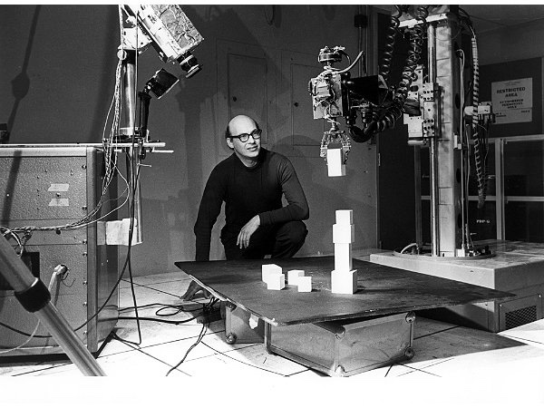

Abstract
During the 1950s and 1960s, the connectionist and symbolic schools of artificial intelligence competed for researcher allegiance and funding, with the symbolic school winning by 1970. This “first neural network winter” lasted until the rise of the connectionist school in the 1980s.
It is often stated that neural networks were killed off by the 1969 publication of Perceptrons by Marvin Minsky and Seymour Papert. This story is wrong on multiple accounts:
- Minsky and Papert had been working towards killing off neural networks since around 1965 by speaking at conferences and circulating preprints.
- The mathematical content studies only the behavior of a single perceptron. It does not study multilayer perceptrons.
- By 1969, most researchers had already left connectionism, frustrated by the lack of progress, as they did not develop backpropagation or deep learning. The last holdout, Frank Rosenblatt, died in 1971.
The book achieved its mythical status as the “neural network killer” by its opportune timing, appearing just as the symbolic school achieved dominance. Since the connectionist school was almost empty, it faced little objection at its publication, creating the illusion that it caused the closure of the perceptron controversy.
In the 1980s, the perceptron controversy reopened with the rise of connectionism. This time the controversy was bypassed without closure. Connectionists demonstrated that backpropagation with MLP bypassed most of the objections from Perceptrons. Minsky and Papert objected that the lessons of Perceptrons still applied, but their objections and lessons had by then become irrelevant.
Minsky and Papert were possibly the most consistent critics of the scaling hypothesis, arguing over decades that neural networks cannot scale beyond mere toy problems. Minsky was motivated by mathematical certainty, as backpropagation–MLP cannot provably find global optima or accomplish any task efficiently, unlike a single perceptron. He rejected all experimental data with large MLP as theory-less data that cannot be extrapolated. Papert was motivated by social justice and epistemological equality. He rejected all scalable uniform architectures, like backpropagation–MLP, as threats to his vision of a society with different but equally valid ways of knowing.
As of 2019, essentially all predictions by Minsky and Papert, concerning the non-scalability of neural networks, had been disproven.
The enigma of Marvin Minsky
In a 1993 interview, Robert Hecht-Nielsen recounted an encounter between Marvin Minsky and the neural network community in the late 1980s1:
1 This was corroborated by a contemporary news report on the International Conference on Neural Networks of 1988:
Minsky who has been criticized by many for the conclusions he and Papert make in ‘Perceptrons,’ opened his defense with the line ‘Everybody seems to think I’m the devil.’ Then he made the statement, ‘I was wrong about Dreyfus too, but I haven’t admitted it yet,’ which brought another round of applause. (quoted in (Olazaran 1991, 285))
Minsky had gone to the same New York “science” high school as Frank Rosenblatt, a Cornell psychology Ph.D. whose “perceptron” neural network pattern recognition machine was receiving significant media attention. The wall-to-wall media coverage of Rosenblatt and his machine irked Minsky. One reason was that although Rosenblatt’s training was in “soft science,” his perceptron work was quite mathematical and quite sound—turf that Minsky, with his “hard science” Princeton mathematics Ph.D., didn’t feel Rosenblatt belonged on. Perhaps an even greater problem was the fact that the heart of the perceptron machine was a clever motor-driven potentiometer adaptive element that had been pioneered in the world’s first neurocomputer, the “SNARC”, which had been designed and built by Minsky several years earlier! In some ways, Minsky’s early career was like that of Darth Vader. He started out as one of the earliest pioneers in neural networks but was then turned to the dark side of the force (AI) and became the strongest and most effective foe of his original community. This view of his career history is not unknown to him. When he was invited to give the keynote address at a large neural network conference in the late 1980s to an absolutely rapt audience, he began with the words: “I am not the Devil!” (Rosenfeld and Anderson 2000, 303–5)
However, it appears that he had changed his mind later. As recounted by Terry Sejnowski:
I was invited to attend the 2006 Dartmouth Artificial Intelligence Conference, “AI@50,” a look back at the seminal 1956 Summer Research Project on artificial intelligence held at Dartmouth and a look forward to the future of artificial intelligence. … These success stories had a common trajectory. In the past, computers were slow and only able to explore toy models with just a few parameters. But these toy models generalized poorly to real-world data. When abundant data were available and computers were much faster, it became possible to create more complex statistical models and to extract more features and relationships between the features.
In his summary talk at the end of the conference, Marvin Minsky started out by saying how disappointed he was both by the talks and by where AI was going. He explained why: “You’re not working on the problem of general intelligence. You’re just working on applications.” …
There was a banquet on the last day of AI@50. At the end of the dinner, the five returning members of the 1956 Dartmouth Summer Research Project on Artificial Intelligence made brief remarks about the conference and the future of AI. In the question and answer period, I stood up and, turning to Minsky, said: “There is a belief in the neural network community that you are the devil who was responsible for the neural network winter in the 1970s. Are you the devil?” Minsky launched into a tirade about how we didn’t understand the mathematical limitations of our networks. I interrupted him—“Dr. Minsky, I asked you a yes or no question. Are you, or are you not, the devil?” He hesitated for a moment, then shouted out, “Yes, I am the devil!” (Sejnowski 2018, 256–58)
What are we to make of the enigma of Minsky? Was he the devil or not?
The intellectual history of Minsky
During his undergraduate years, Minsky was deeply impressed by Andrew Gleason,2 and decided to work on pure mathematics, resulting in his 1951 undergraduate thesis A Generalization of Kakutani’s Fixed-Point Theorem, which extended an obscure fixed-point theorem of Kakutani – not the famous version, as Kakutani proved more than one fixed-point theorem.
2I asked Gleason how he was going to solve it. Gleason said he had a plan that consisted of three steps, each of which he thought would take him three years to work out. Our conversation must have taken place in 1947, when I was a sophomore. Well, the solution took him only about five more years … Gleason made me realize for the first time that mathematics was a landscape with discernible canyons and mountain passes, and things like that. In high school, I had seen mathematics simply as a bunch of skills that were fun to master – but I had never thought of it as a journey and a universe to explore. No one else I knew at that time had that vision, either. (Bernstein 1981)
Theorem 1 (Kakutani’s fixed point theorem on the sphere) If \(f\) is an \(\mathbb{R}^2\)-valued continuous function on the unit sphere in \(\mathbb{R}^3\), then for any side length \(r \in (0, \sqrt{3})\), there exist \(x_1, x_2, x_3\) on the sphere forming an equilateral triangle with side length \(r\), such that \(f(x_1) = f(x_2) = f(x_3)\).
Equivalently, if \(x_1, x_2, x_3\) form an equilateral triangle on the unit sphere, then there exists a rotation \(T\) such that \(f(T(x_1)) = f(T(x_2)) = f(T(x_3))\).
Using knot theory, Minsky proved an extension where \(x_1, x_2, x_3\) are three points of a square or a regular pentagon (Minsky 2011). The manuscript “disappeared” (Minsky n.d.).
I wrote it up and gave it to Gleason. He read it and said, ‘You are a mathematician.’ Later, I showed the proof to Freeman Dyson, at the Institute for Advanced Study, and he amazed me with a proof (Dyson 1951) that there must be at least one square that has the same temperature at all four vertices. He had found somewhere in my proof a final remnant of unused logic. (Bernstein 1981)
He then became interested in neural networks and reinforcement learning, and constructed a very simple electromechanical machine called SNARC.3 The SNARC machine is a recurrent neural network that performs reinforcement learning by the Hebbian learning rule. It simulates a mouse running around a maze, while the operator watches an indicator light showing the mouse. The operator can press a button as a reward signal, which would cause an electric motor to turn a chain. The chain is clutched to rheostats that connect the neurons, with the stretch of the clutch being proportional to the charge in a capacitor. During the operation of the neural network, the capacitor charges up if there is neural co-activation on the connection, and decays naturally, thus serving as a short-term memory. When the reward button is pressed, the clutches turn by an amount proportional to the co-activation of neural connections, thereby completing the Hebbian learning.
3 It was published as (Minsky 1952), but the document is not available online, and I could only piece together a possible reconstruction from the fragments of information.
Minsky was impressed by how well it worked. The machine was designed to simulate one mouse, but by some kind of error it simulated multiple mice, and yet it still worked.
The rats actually interacted with one another. If one of them found a good path, the others would tend to follow it. We sort of quit science for a while to watch the machine. … In those days, even a radio set with twenty tubes tended to fail a lot. I don’t think we ever debugged our machine completely, but that didn’t matter. By having this crazy random design, it was almost sure to work, no matter how you built it. (Bernstein 1981)
This was the last we saw of Minsky’s work with random neural networks. He had crossed the Rubicon, away from the land of brute reason and into the land of genuine insight.
I had the naïve idea that if one could build a big enough network, with enough memory loops, it might get lucky and acquire the ability to envision things in its head. … Even today, I still get letters from young students who say, ‘Why are you people trying to program intelligence? Why don’t you try to find a way to build a nervous system that will just spontaneously create it?’ Finally, I decided that either this was a bad idea or it would take thousands or millions of neurons to make it work, and I couldn’t afford to try to build a machine like that. (Bernstein 1981)
For his PhD thesis, Minsky worked on the mathematical theory of McCulloch–Pitts neural networks. In style, it was a fine piece of classical mathematics (Minsky 1954). Minsky would go on to write (Minsky 1967, chap. 3), still the best introduction to McCulloch–Pitts neural networks.
Minsky’s doctoral dissertation in mathematics from Princeton in 1954 was a theoretical and experimental study of computing with neural networks. He had even built small networks from electronic parts to see how they behaved. The story I heard when I was a graduate student at Princeton in physics was that there wasn’t anyone in the Mathematics Department who was qualified to assess his dissertation, so they sent it to the mathematicians at the Institute for Advanced Study in Princeton who, it was said, talked to God. The reply that came back was, “If this isn’t mathematics today, someday it will be,” which was good enough to earn Minsky his PhD. (Sejnowski 2018, 259)
Reading the story, I recalled “Sussman attains enlightenment”, a hacker koan about Minsky and his student Sussman 4:
4 This is based on a true story.
… Sussman told Minsky that he was using a certain randomizing technique in his program because he didn’t want the machine to have any preconceived notions. Minsky said, “Well, it has them, it’s just that you don’t know what they are.” It was the most profound thing Gerry Sussman had ever heard. And Minsky continued, telling him that the world is built a certain way, and the most important thing we can do with the world is avoid randomness, and figure out ways by which things can be planned. (Levy 2010, 110–11)
In the days when Sussman was a novice, Minsky once came to him as he sat hacking at the PDP-6. “What are you doing?”, asked Minsky. “I am training a randomly wired neural net to play Tic-Tac-Toe” Sussman replied. “Why is the net wired randomly?”, asked Minsky. “I do not want it to have any preconceptions of how to play”, Sussman said. Minsky then shut his eyes. “Why do you close your eyes?”, Sussman asked his teacher. “So that the room will be empty.” At that moment, Sussman was enlightened.
As for Sussman, I knew him for two things: writing the SICP book, and being the coordinator of the infamous summer vision project that was to construct “a significant part of a visual system” in a single summer, using only undergraduate student researchers. A brief read of his “reading list” shows where his loyalties lie: firmly in the school of neats.
(Sejnowski 2018, 28) recounts the background of the summer vision project:
In the 1960s, the MIT AI Lab received a large grant from a military research agency to build a robot that could play Ping-Pong. I once heard a story that the principal investigator forgot to ask for money in the grant proposal to build a vision system for the robot, so he assigned the problem to a graduate student as a summer project. I once asked Marvin Minsky whether the story was true. He snapped back that I had it wrong: “We assigned the problem to undergraduate students.”
After rejecting neural networks, Minsky became a leading researcher in AI. His style of AI is typically described as “symbolic AI”, although a more accurate description would be The Society of Mind (SoM). Minsky developed the SoM in the 1960s and 1970s with his long-time collaborator, Seymour Papert, inspired by their difficulty with building robots, and published the definitive account in (Minsky 1988). The SoM thesis states that “any brain, machine, or other thing that has a mind must be composed of smaller things that cannot think at all”.
Stated in this way, it seems patently compatible with neural networks, but only on the surface. Minsky concretely described how he expected a Society of Mind to work, based on his attempts at making Builder, a robot that can play with blocks:
Both my collaborator, Seymour Papert, and I had long desired to combine a mechanical hand, a television eye, and a computer into a robot that could build with children’s building-blocks. It took several years for us and our students to develop Move, See, Grasp, and hundreds of other little programs we needed to make a working Builder-agency. I like to think that this project gave us glimpses of what happens inside certain parts of children’s minds when they learn to “play” with simple toys. The project left us wondering if even a thousand microskills would be enough to enable a child to fill a pail with sand. It was this body of experience, more than anything we’d learned about psychology, that led us to many ideas about societies of mind.
To do those first experiments, we had to build a mechanical Hand, equipped with sensors for pressure and touch at its fingertips. Then we had to interface a television camera with our computer and write programs with which that Eye could discern the edges of the building-blocks. It also had to recognize the Hand itself. When those programs didn’t work so well, we added more programs that used the fingers’ feeling-sense to verify that things were where they visually seemed to be. Yet other programs were needed to enable the computer to move the Hand from place to place while using the Eye to see that there was nothing in its way. We also had to write higher-level programs that the robot could use for planning what to do—and still more programs to make sure that those plans were actually carried out. To make this all work reliably, we needed programs to verify at every step (again by using Eye and Hand) that what had been planned inside the mind did actually take place outside—or else to correct the mistakes that occurred. … Thousands and, perhaps, millions of little processes must be involved in how we anticipate, imagine, plan, predict, and prevent—and yet all this proceeds so automatically that we regard it as “ordinary common sense.” (Minsky 1988, sec. 2.5)

From the concrete description, as well as the many attractive illustrations in the book, it is clear that Minsky intended the “Society of Mind” to be a uniform computing substrate (silicon or carbon) upon which millions of little symbolic programs are running, each capable of running some specific task, each describable by a distinct and small piece of symbolic program. They cannot be mere perceptrons in a uniform block of neural network, or mere logic gates in a uniform block of CPU.
In his 1988 book, Minsky described dozens of these heterogeneous components he thought might make up a Society of Mind. However, the precise details are not relevant,5 as he freely admitted that they are conjectured. He was only adamant about the overarching scheme: heterogeneous little separated components, not a homogeneous big connected piece.
5 The conjectured components included “K-lines”, “nomes”, “nemes”, “frames”, “frame-arrays”, etc. Although Minsky meant for this SoM project to last a very long time, building up to general intelligence brick by brick, my literature search shows that there had been no new development since the 2000s, so the overview (Singh 2003) still represents the SOTA of SoM.
Perhaps a modern reincarnation of such an idea would be the dream of Internet agents operating in a digital economy, populated by agents performing simple tasks like spam filtering, listening for the price of petroleum, etc. Some agents would interface with reality, while others would interface with agents. Some agents are organized at a higher level into DAOs, created by a small committee of simple “manager agents” serving as the interface and coordinators for other agents. DAOs can interface with other DAOs through little speaker-agents, which consist of a simple text filter for the torrent of information and then outsource to text-weaving agents to compose the actual messages they send out.
Seymour Papert
Seymour Papert, the long-time collaborator of Minsky, was the second author of Perceptrons. To unlock the enigma of Minsky, we must look into Papert’s past as well.
In 1958, after earning a doctorate in mathematics, he met Jean Piaget and became his pupil for four years. This experience had a formative effect on Papert. Piaget’s work was an important influence on the constructivism philosophy in education, and Papert would go on to bring constructivism from books to classrooms. He was particularly hopeful that computers can realize the constructivist dream of unlocking the kaleidoscopic creativity that a child can construct.
The main theme of Jean Piaget’s work was developmental psychology – how children’s understanding of the world changes as they grow up. What goes on in their mind as they progressively understand that things fall down, what dogs are, and that solid steel sinks but hollow steel might float? Piaget discovered that children did not simply start with a blank sheet of paper and gradually fill in sketchy details of the true model. Instead they constructed little models of small facets of reality that would be modified or completely replaced as they encounter new phenomena that their old models cannot explain. In this way, Piaget claimed that children are “little scientists”.
A small example illustrates the idea. When children see that a leaf floats on water, but a stone sinks, they add a rule “Soft things float, while hard things sink.”. Then, they see that a hard plastic boat floats too, so they add a rule “Except hard and light things also float.”. Then, they see that a large boat also floats, so they rewrite the entire model to “Flat-bottomed things float, while small-bottomed things sink.”. And so on.
There are conservative and radical ways of using Piaget’s research for pedagogy. The conservative approach involves studying how children construct their scientific theories and identifying a sequence of evidence to present to these young scientists so they can quickly reach scientific orthodoxy. For example, we might show children videos of curling and air hockey, then let them play with an air hockey table, following this with guided exercises, so they race through animism, Aristotelian physics, impetus theory, etc, and end up with Newton’s laws of motion.
The radical way is to decenter the orthodoxy and let a thousand heterodoxies bloom. Why go for the orthodoxy, when the Duhem–Quine thesis tells us that evidence is never enough to constrain us to only one orthodoxy? And given that objectively no theory deserves the high name of “orthodoxy”, how did the scientific “orthodoxy” become dominant? A critical analysis of the history shows that its dominance over Aboriginal and woman ways of knowing is merely a historical accident due to an alliance with the hegemonic reason of the metropole over the periphery.6
6 This is not a joke, since decolonial studies literally begin with this assumption.
Papert went with the radical way.
After four years of study under Piaget, he arrived in MIT in 1963, and began working with Minsky on various topics, including the Logo Turtle robot, and the Perceptrons book. The computer revolution was starting, and Papert saw computers as a way to bring radical constructivism to children.
In the real world, phenomena are limited by nature, and aspiring little heterodoxy-builders are limited by their ability to construct theories and check their consequences. In the computer world, every child could program and construct “microworlds” from their own theories. Thus, computers would bring constructivism to the classroom. Furthermore, the constructed world inside computers could then flow out to the physical world via robots. This is why Papert worked on both Logo the programming language and Logo the turtle robots. In his words, he intended to fight “instructionism” with “constructionism” by bringing the power of the computer to every child, so that they would grow up to be “bricoleurs”, working with whatever little tool they have available doing whatever is necessary to accomplish little things. This is a vital piece in his overarching project of epistemological pluralism, to liberate heterodoxical ways of knowing (S. A. Papert 1994, chap. 7):
Traditional education codifies what it thinks citizens need to know and sets out to feed children this “fish.” Constructionism is built on the assumption that children will do best by finding (“fishing”) for themselves the specific knowledge they need … it is as well to have good fishing lines, which is why we need computers, and to know the location of rich waters, which is why we need to develop a large range of mathetically rich activities or “microworlds.”
… School math, like the ideology, though not necessarily the practice, of modern science, is based on the ideal of generality – the single, universally correct method that will work for all problems and for all people. Bricolage is a metaphor for the ways of the old-fashioned traveling tinker, the jack-of-all-trades who knocks on the door offering to fix whatever is broken. Faced with a job, the tinker rummages in his bag of assorted tools to find one that will fit the problem at hand and, if one tool does nor work for the job, simply tries another without ever being upset in the slightest by the lack of generality. The basic tenets of bricolage as a methodology for intellectual activity are: Use what you’ve got, improvise, make do. And for the true bricoleur, the tools in the bag will have been selected over a long time by a process determined by more than pragmatic utility. These mental tools will be as well worn and comfortable as the physical tools of the traveling tinker; they will give a sense of the familiar, of being at ease with oneself …
Kitchen math provides a clear demonstration of bricolage in its seamless connection with a surrounding ongoing activity that provides the tinker’s bag of tricks and tools. The opposite of bricolage would be to leave the “cooking microworld” for a “math world,” to work the fractions problem using a calculator or, more likely in this case, mental arithmetic. But the practitioner of kitchen math, as a good bricoleur, does not stop cooking and turn to math; on the contrary, the mathematical manipulations of ingredients would be indistinguishable to an outside observer from the culinary manipulations.
… The traditional epistemology is based on the proposition, so closely linked to the medium of text-written and especially printed. Bricolage and concrete thinking always existed but were marginalized in scholarly contexts by the privileged position of text. As we move into the computer age and new and more dynamic media emerge, this will change.
According to Papert, his project is epistemological pluralism, or promoting different ways of knowing:
The diversity of approaches to programming suggests that equal access to even the most basic elements of computation requires accepting the validity of multiple ways of knowing and thinking, an epistemological pluralism. Here we use the word epistemology in a sense closer to Piaget’s than to the philosopher’s. In the traditional usage, the goal of epistemology is to inquire into the nature of knowledge and the conditions of its validity; and only one form of knowledge, the propositional, is taken to be valid. The step taken by Piaget in his definition of epistemologie genetique was to eschew inquiry into the “true” nature of knowledge in favor of a comparative study of the diverse nature of different kinds of knowledge, in his case the kinds encountered in children of different ages. We differ from Piaget on an important point, however. Where he saw diverse forms of knowledge in terms of stages to a finite end point of formal reason, we see different approaches to knowledge as styles, each equally valid on its own terms.
… The development of a new computer culture would require more than environments where there is permission to work with highly personal approaches. It would require a new social construction of the computer, with a new set of intellectual and emotional values more like those applied to harpsichords than hammers. Since, increasingly, computers are the tools people use to write, to design, to play with ideas and shapes and images, they should be addressed with a language that reflects the full range of human experiences and abilities. Changes in this direction would necessitate the reconstruction of our cultural assumptions about formal logic as the “law of thought.” This point brings us full circle to where we began, with the assertion that epistemological pluralism is a necessary condition for a more inclusive computer culture.
The project of epistemological pluralism erupted into public consciousness during the “Science Wars” of 1990s. After that, it had stayed rather quiet.
The perceptron controversy
Connectionism, 1945–1970
In the early days, there were several centers of connectionist research, clustered around Frank Rosenblatt, Bernard Widrow, and the Stanford Research Institute (SRI). Out of those centers of research, Minsky and Papert targeted mostly Rosenblatt’s research.
Frank Rosenblatt’s research had three modes: mathematical theory, experiments on bespoke machines, such as the Mark I Perceptron and the Tobermory, and experiments on serial digital computers, usually IBM machines. He was strongly inclined to building two-layered perceptron machines where the first layer was fixed 0-1 weights, and only the second layer contained real-valued weights learned by the perceptron learning rule. This is precisely the abstract model of the perceptron machine used by Minsky and Papert.
After 4 years of research, he published a summary of his work in (Rosenblatt 1962). In the book, he noted that there were many problems that the perceptron machines could not learn well. As summarized in (Olazaran 1991, 116–21),
… two stimuli (presented one after another) had to occupy nearly the same area of the retina in order to be classified as similar. … The lack of an adequate preprocessing system meant that a set of association units had to be dedicated to the recognition of each possible object, and this created an excessively large layer of association units in the perceptron. … Other problems were excessive learning time, excessive dependence on external evaluation (supervision), and lack of ability to separate essential parts in a complex environment. Rosenblatt (1962, pp. 309-310) included the ‘figure-ground’ or ‘connectedness’ problem in this last point.
A number of perceptrons analyzed in the preceding chapters have been analyzed in a purely formal way, yielding equations which are not readily translated into numbers. This is particularly true in the case of the four-layer and cross-coupled systems, where the generality of the equations is reflected in the obscurity of their implications. … The previous questions [from the first to the twelfth] are all in the nature of ‘mopping-up’ operations in areas where some degree of performance is known to be possible . . . [However,] the problems of figure-ground separation (or recognition of unity) and topological relation recognition represent new territory, against which few inroads have been made.” (Rosenblatt, 1962a, pp. 580-581)
Almost every one of these problems was specifically targeted by the Perceptrons book. For example, the difficulty of testing for “connectedness” was a centerpiece of the entire book, the difficulty of recognizing symmetry was studied by “stratification” and shown to have exponentially growing coefficients (Chapter 7), the requirement for “had to occupy nearly the same area of the retina” was targeted by studies on the limitations of “diameter-limited perceptrons” (Chapter 8), the “figure-ground problem” was targeted by showing “recognition-in-context” has infinite order (Section 6.6), the “generality of the equations is reflected in the obscurity of their implications” was targeted by comments such as “if there is no restriction except for the absence of loops, the monster of vacuous generality once more raises its head” (Section 13.2), etc.
Bernard Widrow worked mostly in collaboration with Marcian Hoff. Their work is detailed in my essay The Backstory of Backpropagation. In short, they first developed a least-mean-square gradient descent method to train a single perceptron, then proceeded to two-layered perceptrons and predictably failed to develop backpropagation, as the activation function is not differentiable. Thereafter, Widrow gave up neural networks until learning of backpropagation in the 1980s.
Widrow and his students developed uses for the Adaline and Madaline. Early applications included, among others, speech and pattern recognition, weather forecasting, and adaptive controls. Work then switched to adaptive filtering and adaptive signal processing after attempts to develop learning rules for networks with multiple adaptive layers were unsuccessful. … After 20 years of research in adaptive signal processing, the work in Widrow’s laboratory has once again returned to neural networks.
At the time that Hoff left, about 1965 or 1966, we had already had lots of troubles with neural nets. My enthusiasm had dropped. But we were beginning to have successful adaptive filters, in other words, finding good applications. … So we stopped, basically stopped on neural nets, and began on adaptive antennas very strongly.
Interview with Widrow, quoted in (Olazaran 1991, 129–30)
SRI had a strong AI program, with luminaries such as Nils Nilsson, Charles Rosen, Duda, and Hart. At first they worked on a series of systems, MINOS I to III.
When I first interviewed for a position at SRI in 1961, I was warned by one researcher there against joining research on neural networks. Such research, he claimed, was “premature,” and my involvement in it could damage my reputation.
MINOS II was representative of the whole series. Made in 1962, it had 3 layers: input, hidden, output, but only one was trainable. The input-to-hidden layer consists of 100 photomasks. That is, given an input image, that image is filtered through a mask, and the light is focussed by a convex lens to a single photosensitive pixel. If the light level exceeds a threshold, it is a 1. Else, it is a 0. Repeat this 100 times, one for each mask, and we have converted an image to 100 binary bits.
In the hidden-to-output layer, they ran the standard perceptron learning rule. Presumably, they used hand-designed photomasks because they also had no better training method than the perceptron learning rule. Since they used 0-1 activation functions like everyone else, they were frustrated by the same problem of not doing backpropagation, so they switched to symbolic AI techniques around 1965.

In 1973, Duda and Hart published the famous “Duda and Hart” book on pattern classification (Duda and Hart 1973). The book contained two halves. The first half was statistical: Bayes, nearest neighbors, perceptron, clustering, etc. The second half was on scene analysis, a symbolic-AI method for computer vision. Indeed, Minsky and Papert promoted it as superior to perceptron networks.7 Shakey the robot, built between 1966 and 1972, was a tour de force of scene analysis, and it could move around a mock-up of an office building, pushing around cubes along the way. Its program was written in LISP, the staple programming language for symbolic AI.
7 It is instructive to compare the first edition with the second, published in 2001 (Duda, Hart, and Stork 2001). It had become almost completely statistical. There were new chapters on neural networks, Boltzmann machines, decision trees, and so on. In contrast, scene analysis was completely removed.
It says something about the obsolescence of scene analysis even in 2001, as Duda and Hart deleted half of their most famous book just to avoid talking about it. In fact, the only mention of “scene analysis” is a condemnation:
Some of the earliest work on three-dimensional object recognition relied on complex grammars which described the relationships of corners and edges, in block structures such arches and towers. It was found that such systems were very brittle; they failed whenever there were errors in feature extraction, due to occlusion and even minor misspecifications of the model. For the most part, then, grammatical methods have been abandoned for object recognition and scene analysis. (Duda, Hart, and Stork 2001, sec. 8.8)
I got very interested for a while in the problem of training more than one layer of weights, and was not able to make very much progress on that problem. … When we stopped the neural net studies at SRI, research money was running out, and we began looking for new ideas. (Nilsson, interview)
About 1965 or 1966 we decided that we were more interested in the other artificial intelligence techniques. … Our group never solved the problem of training more than one layer of weights in an automatic fashion. We never solved that problem. That was most critical. Everybody was aware of that problem. (Rosen, interview)
Bill Ridgway (one of Bernard Widrow’s Stanford students) adjusted weights in the first layer of what he called a MADALINE. We had a similar scheme for adjusting weights in the first layer of the MINOS II and MINOS III neural network machines at SRI. Others used various statistical techniques to set weight values. But what stymied us all was how to change weights in more than one layer of multilayer networks. (I recall Charles Rosen, the leader of our group, sitting in his office with yellow quadrille tablets hand-simulating his ever-inventive schemes for making weight changes; none seemed to work out.)
The perceptron controversy, 1960s
In the middle nineteen-sixties, Papert and Minsky set out to kill the Perceptron, or, at least, to establish its limitations – a task that Minsky felt was a sort of social service they could perform for the artificial-intelligence community. (Bernstein 1981)
Although the book was published only in 1969, close to the end of the perceptron controversy, the influence of Minsky and Papert had been felt years earlier as they attended conferences and disseminated their ideas through talks and preprints, sometimes quarreling on stage. Both sides had their motivations and the conflict was real.
In order to show the extent of the perceptron controversy, it is interesting to repeat some of the rhetorical expressions that were used in it: ‘many remember as great spectator sport the quarrels Minsky and Rosenblatt had;’ ‘Rosenblatt irritated a lot of people;’ ‘Rosenblatt was given to steady and extravagant statements about the performance of his machine;’ ‘Rosenblatt was a press agent’s dream, a real medicine man;’ ‘to hear Rosenblatt tell it, his machine was capable of fantastic things;’ ‘they disparaged everything Rosenblatt did, and most of what ONR did in supporting him;’ ‘a pack of happy bloodhounds;’ ‘Minsky knocked the hell out of our perceptron business;’ ‘Minsky and his crew thought that Rosenblatt’s work was a waste of time, and Minsky certainly thought that our work at SRI was a waste of time;’ ‘Minsky and Papert set out to kill the perceptron, it was a sort of social service they could perform for the Al community;’ ‘there was some hostility;’ ‘we became involved with a somewhat therapeutic compulsion;’ ‘a misconception that would threaten to haunt artificial intelligence;’ ‘the mystique surrounding such machines.’ These rhetorical expressions show the extent (the heat) of the perceptron controversy beyond doubt. (Olazaran 1991, 112)
Charles Rosen of SRI recalls:
Minsky and his crew thought that Frank Rosenblatt’s work was a waste of time, and they certainly thought that our work at SRI was a waste of time. Minsky really didn’t believe in perceptrons, he didn’t think it was the way to go. I know he knocked the hell out of our perceptron business. (Olazaran 1993, 622)
When Perceptrons was finally published in 1969, the connectionist camp was already deserted. The SRI group had switched to symbolic AI projects; Widrow’s group had switched to adapting single perceptrons to adaptive filtering; Frank Rosenblatt was still labouring, isolated, with dwindling funds, until his early death in 1971.8
8 The 1972 reprinting of Perceptrons included a handwritten note, “In memory of Frank Rosenblatt”. This was not an ironic dedication, as Minsky and Rosenblatt were personally friendly, although their research paradigms had been fighting for dominance.
During the last days of Rosenblatt, he worked on a massive expansion of the Mark I Perceptron, the Tobermory (1961–1967). Named after a talking cat, it was built for speech recognition. It had 4 layers with 45-1600-1000-12 neurons, and 12,000 adjustable weights implemented with tape-wound magnetic cores. As usual for Rosenblatt, these adjustable weights are all in the last layer (\(12000 = 1000 \times 12\)). By the time of its completion, simulation on digital computers had become faster than purpose-built perceptron machines. (George Nagy 1991) Indeed, often during the history of neural networks, someone would think “this calls for a purpose-made computer” and a few years later, Moore’s law obsoleted their effort. A kind of hardware bitter lesson.

(Olazaran 1991) gathered evidence that the publication of Perceptrons was not the cause but a “marker event” for the end of the perceptron controversy and the ascendancy of the symbolic AI school. The book was not the neural network killer, but its epitaph.
Connectionist retrospectives, 1990s
Following the resurgence of connectionism in the 1980s, Anderson and Rosenfeld conducted interviews with prominent connectionists throughout the 1990s, compiled in (Rosenfeld and Anderson 2000). The perceptron controversy is mentioned several times. Reading the interviews gives one a distinct feeling of Rashomon. The same events are recounted from multiple perspectives. I will excerpt some of the most important ones for the essay.
Jack D. Cowan gave an “eyewitness account” of Minsky and Papert’s role in the controversy, before the publication of the book in 1969.
ER: I’m curious about one thing. You said that Minsky and Papert first presented their notions about exclusive-OR in the Perceptron work [in a 1965 conference].
JC: Well, they first presented their notions about the limitations of perceptrons and what they could and couldn’t do.
ER: They hadn’t gotten to exclusive-OR yet?
JC: They had, but that wasn’t a central issue for them. The essential issue was, suppose you had diameter-limited receptive fields in a perceptron, what could it compute?
ER: How was that received at that first conference?
JC: Both of them were quite persuasive speakers, and it was well received. What came across was the fact that you had to put some structure into the perceptron to get it to do anything, but there weren’t a lot of things it could do. The reason was that it didn’t have hidden units. It was clear that without hidden units, nothing important could be done, and they claimed that the problem of programming the hidden units was not solvable. They discouraged a lot of research and that was wrong. … Everywhere there were people working on perceptrons, but they weren’t working hard on them. Then along came Minsky and Papert’s preprints that they sent out long before they published their book. There were preprints circulating in which they demolished Rosenblatt’s claims for the early perceptrons. In those days, things really did damp down. There’s no question that after ’62 there was a quiet period in the field.
ER: Robert Hecht-Nielsen has told me stories that long before Minsky and Papert ever committed anything to a paper that they delivered at a conference or published anywhere, they were going down to ARPA and saying, “You know, this is the wrong way to go. It shouldn’t be a biological model; it should be a logical model.”
JC: I think that’s probably right. In those days they were really quite hostile to neural networks. I can remember having a discussion with Seymour … in the ’60s. We were talking about visual illusions. He felt that they were all higher-level effects that had nothing to do with neural networks as such. They needed a different, a top-down approach to understand. By then he had become a real, a true opponent of neural networks. I think Marvin had the same feelings as well. To some extent, David Marr had those feelings too. After he got to the AI lab, I think he got converted to that way of thinking. Then Tommy Poggio essentially persuaded him otherwise.
Teuvo Kohonen seemed also angry at the Chomskyan school, for reasons I sketched out in the appendix on the Chomskyans.
I was one of the people suffering from Minsky and Papert’s book [Perceptrons] because it went roughly this way: you start telling somebody about your work, and this visitor or whoever you talk to says, “Don’t you know that this area is dead?” It is something like what we experienced in the pattern recognition society when everything started to be structural and grammatical and semantic and so on. If somebody said, “I’m doing research on the statistical pattern recognition,” then came this remark, “Hey, don’t you know that is a dead idea already?”
Michael A. Arbib thought the book did not cause the neural network winter, but rather caused by the change in funding.
Minsky and Papert basically said that if you limit your networks to one layer in depth, then, unless you have very complicated individual neurons, you can’t do very much. This is not too surprising. … Many people see the book as what killed neural nets, but I really don’t think that’s true. I think that the funding priorities, the fashions in computer science departments, had shifted the emphasis away from neural nets to the more symbolic methods of AI by the time the book came out. I think it was more that a younger generation of computer scientists who didn’t know the earlier work may have used the book as justification for sticking with “straight AI” and ignoring neural nets.
Bernard Widrow concurred.
I looked at that book, and I saw that they’d done some serious work here, and there was some good mathematics in this book, but I said, “My God, what a hatchet job.” I was so relieved that they called this thing the perceptron rather than the Adaline because actually what they were mostly talking about was the Adaline, not the perceptron. I felt that they had sufficiently narrowly defined what the perceptron was, that they were able to prove that it could do practically nothing. Long, long, long before that book, I was already successfully adapting Madaline [Madaline = many Adalines], which is a whole bunch of neural elements. All this worry and agony over the limitations of linear separability, which is the main theme of the book, was long overcome.
We had already stopped working on neural nets. As far as I knew, there wasn’t anybody working on neural nets when that book came out. I couldn’t understand what the point of it was, why the hell they did it. But I know how long it takes to write a book. I figured that they must have gotten inspired to write that book really early on to squelch the field, to do what they could to stick pins in the balloon. But by the time the book came out, the field was already gone. There was just about nobody doing it.
James A. Anderson pointed out that during the “winter”, neural networks survived outside of AI.
This was during the period sometimes called the neural network dark ages, after the Minsky and Papert book on perceptrons had dried up most of the funding for neural networks in engineering and computer science. Neural networks continued to be developed by psychologists, however, because they turned out to be effective models in psychology … What happened during the dark ages was that the ideas had moved away from the highly visible areas of big science and technology into areas of science that did not appear in the newspapers.
David Rumelhart had nice things to say about Minsky, with no trace of bitterness. It is understandable as he only started working in neural networks years after the controversy died down.
I always had one course that was like a free course in which I would choose a book of the year and teach out of that. In 1969, I think it was, or maybe ’70, I chose Perceptrons by Minsky and Papert as the book of the year. We then carefully went through it and read it in a group. … This was my most in-depth experience with things related to neural networks, or what were later called neural networks. I was quite interested in Minsky in those days because he also had another book which was called, I think, Semantic Information Processing. That book was a collection, including an article by Ross Quillian. It was a collection of dissertations from his graduate students. In a way, it was Minsky who led me to read about the perceptron more than anybody else.
Regarding Robert Hecht-Nielsen, we have already seen his belief that Minsky was “Darth Vader” and possibly “the Devil”. Unsurprisingly, he was the most embittered, and placed the blame for the 1970s neural network winter squarely on the publication of Perceptrons.
By the mid-1970s, Minsky and his colleagues (notably Seymour Papert) began to take actions designed to root out neural networks and ensure large and, in their view, richly deserved funding for AI research by getting the money currently being “wasted” on neural networks, and more to boot, redirected. They did two things. First, Minsky and Papert began work on a manuscript designed to discredit neural network research. Second, they attended neural network and “bionics” conferences and presented their ever-growing body of mathematical results being compiled in their manuscript to what they later referred to as “the doleful responses” of members of their audiences.
At the heart of this effort was Minsky and Papert’s growing manuscript, which they privately circulated for comments. The technical approach they took in the manuscript was based on a mathematical theorem discovered and proven some years earlier—ironically, by a strong supporter of Rosenblatt—that the perceptron was incapable of ever implementing the “exclusive-OR” [X-OR] logic function. What Minsky and Papert and their colleagues did was elaborate and bulk up this idea to book length by devising many variants of this theorem. Some, such as a theorem showing that single-layer perceptrons, of many varied types, cannot compute topological connectedness, are quite clever. To this technical fabric, they wove in what amounted to a personal attack on Rosenblatt. This was the early form of their crusade manifesto.
Later, on the strong and wise advice of colleagues, they expunged the vitriol. They didn’t quite get it all, as a careful reading will show. They did a complete flip-flop, dedicating the book to Rosenblatt! As their colleagues sensed it would, this apparently “objective” evaluation of perceptrons had a much more powerful impact than the original manuscript with its unseemly personal attack would have. Of course, in reality, the whole thing was intended, from the outset, as a book-length damnation of Rosenblatt’s work and many of its variants in particular, and, by implication, all other neural network research in general.
Minsky and Papert’s book, Perceptrons, worked. The field of neural networks was discredited and destroyed. The book and the associated conference presentations created a new conventional wisdom at DARPA and almost all other research sponsorship organizations that some MIT professors have proven mathematically that neural networks cannot ever do anything interesting. The chilling effect of this episode on neural network research lasted almost twenty years.
The message of Perceptrons
Minsky described how he and Papert felt impelled to write the book by a “therapeutic compulsion”, since they were “appalled” by the influence perceptrons:
Both of the present authors (first independently and later together) became involved with a somewhat therapeutic compulsion: to dispel what we feared to be the first shadows of a “holistic” or “Gestalt” misconception that would threaten to haunt the fields of engineering and artificial intelligence as it had earlier haunted biology and psychology. For this, and for a variety of more practical and theoretical goals, we set out to find something about the range and limitations of perceptrons.
Our first formal presentation of the principal results in this book was at an American Mathematical Society symposium on Mathematical Aspects of Computer Science in April 1966. At this time we could prove that \(\psi_{CONNECTED}\) was not of finite order and conjectured that the same must be true of the apparently “global” predicates of symmetry and twins described in §7.3.
For the rest of 1966 the matter rested there. We were pleased and encouraged by the enthusiastic reception by many colleagues at the A.M.S. meeting and no less so by the doleful reception of a similar presentation at a Bionics meeting. However, we were now involved in establishing at M.I.T. an artificial intelligence laboratory largely devoted to real “seeing machines”, and gave no attention to perceptrons until we were jolted by attending an I.E.E.E. Workshop on Pattern Recognition in Puerto Rico early in 1967.
Appalled at the persistent influence of perceptrons (and similar ways of thinking) on practical pattern recognition, we determined to set out our work as a book.
This 1966 encounter had been corroborated in other places.9 According to Kanal, the workshop was in fact held in 1966 October 24–26, and that only 5 out of 30 papers were about neural networks for pattern recognition. I suppose for Minsky and Papert, 5 out of 30 is 5 too many. (Kanal 1993)
9In 1966, a few dozen researchers traveled to Puerto Rico, gathering at the Hilton hotel in San Juan. They met to discuss the latest advances in what was then called “pattern recognition”–technology that could identify patterns in images and other data. Whereas Rosenblatt viewed the Perceptron as a model of the brain, others saw it as a means of pattern recognition… Rosenblatt didn’t even travel to Puerto Rico. Inside the Hilton, the tension emerged when a young scientist named John Munson addressed the conference. Munson worked at SRI… There, alongside a larger team of researchers, he was trying to build a neural network that could read handwritten characters, not just printed letters, and with his presentation at the conference, he aimed to show the progress of this research. But when Munson finished the lecture and took questions from the floor, Minsky made himself heard. “How can an intelligent young man like you,” he asked, “waste your time with something like this?” … “This is an idea with no future.” (Metz 2021)
The book has become a true classic: everybody wants to have read and nobody wants to read. Taking the opposite approach, I have read the book, despite not wanting to read it.
Its content can be neatly divided into a greater and a lesser half. The greater half is a mathematical monograph on which functions can be implemented by a single perceptron with fixed featurizers, and the lesser half is a commentary on the wider implications of the monograph. The impact of the work is precisely reversed: most of the impact comes from the commentary derived from the results, and effectively no impact comes from the mathematical results themselves.
Despite this imbalance, the mathematical work is substantial, and the perceptron controversy turns critically on the pliable interpretation sprouting from the solid structure. Therefore, I have detailed the mathematical content in a separate essay, Reading Perceptrons, to which I refer occasionally to gloss their interpretation.
Minsky and Papert struck back
In the 1980s, neural networks rose again to prominence under the name of “connectionism”, prompting an eventual response from Minsky and Papert. The Perceptrons book was reissued in 1988, with new chapters dedicated to rejecting connectionism. They took the 1986 two-volume work of Parallel Distributed Processing (PDP), especially (Rumelhart, Hinton, and Williams 1985) 10, as the representative of connectionism, and made specific objections to them.
10 This paper was reprinted in (Rumelhart and McClelland 1986, vol. 1, chapter 8), in which Minsky and Papert read it. This paper is often cited for the backpropagation algorithm, which I have discussed in The Backstory of Backpropagation.
In the prologue, they staked their claim thus: Connectionism is a mistake engendered by a new generation of researchers ignorant of history; though the theorems of the Perceptrons book apply to only a single perceptron, the lessons extend to all neural networks. To back up the claim, they made specific technical, historical, and philosophical objections, all with the central goal of showing that homogeneous neural networks cannot scale.
… when we found that little of significance had changed since 1969, when the book was first published, we concluded that it would be more useful to keep the original text (with its corrections of 1972) and add an epilogue, so that the book could still be read in its original form. One reason why progress has been so slow in this field is that researchers unfamiliar with its history have continued to make many of the same mistakes that others have made before them.
… there has been little clear-cut change in the conceptual basis of the field. The issues that give rise to excitement today seem much the same as those that were responsible for previous rounds of excitement. … many contemporary experimenters assume that, because the perceptron networks discussed in this book are not exactly the same as those in use today, these theorems no longer apply. Yet, as we will show in our epilogue, most of the lessons of the theorems still apply.
In an earlier interview, Minsky reiterated his belief that the proper place of perceptrons is solving tiny problems with tiny perceptron networks.
… for certain purposes the Perceptron was actually very good. I realized that to make one all you needed in principle was a couple of molecules and a membrane. So after being irritated with Rosenblatt for overclaiming, and diverting all those people along a false path, I started to realize that for what you get out of it – the kind of recognition it can do – it is such a simple machine that it would be astonishing if nature did not make use of it somewhere. It may be that one of the best things a neuron can have is a tiny Perceptron, since you get so much from it for so little. You can’t get one big Perceptron to do very much, but for some things it remains one of the most elegant and simple learning devices I know of. (Bernstein 1981)
They also urged all AI researchers to adopt the Society of Mind hypothesis, or else face the charge of being unreflective or of drawing lines where none exists. It seems to me that Minsky wrote most of the prologue and epilogue, because in Papert’s solo paper, he went considerably further with sociological interpretation.
This broad division makes no sense to us, because these attributes are largely independent of one another; for example, the very same system could combine symbolic, analogical, serial, continuous, and localized aspects. Nor do many of those pairs imply clear opposites; at best they merely indicate some possible extremes among some wider range of possibilities. And although many good theories begin by making distinctions, we feel that in subjects as broad as these there is less to be gained from sharpening boundaries than from seeking useful intermediates.
… Are there inherent incompatibilities between those connectionist and symbolist views? The answer to that depends on the extent to which one regards each separate connectionist scheme as a self-standing system. If one were to ask whether any particular, homogeneous network could serve as a model for a brain, the answer (we claim) would be, clearly. No. But if we consider each such network as a possible model for a part of a brain, then those two overviews are complementary. This is why we see no reason to choose sides.
… Most researchers tried to bypass [the technical objections], either by ignoring them or by using brute force or by trying to discover powerful and generally applicable methods. Few researchers tried to use them as guides to thoughtful research. We do not believe that any completely general solution to them can exist …
We now proceed to the epilogue and its arguments.
1980s connectionism is not that different
They speculated on the reason for the revival of neural networks. Was it because of the development of backpropagation, multilayer networks, and faster computers? Emphatically not. In fact, 1980s connectionists were not different from the 1960s connectionists. It is only the ignorance of history that made them think otherwise. In both periods, connectionism was focused on making small-scale experiments and then extrapolating to the largest scale, without mathematical theorems to justify the extrapolation. In both periods, connectionism failed (or would fail) to scale beyond toy problems.
most of the theorems in this book are explicitly about machines with a single layer of adjustable connection weights. But this does not imply (as many modern connectionists assume) that our conclusions don’t apply to multilayered machines. To be sure, those proofs no longer apply unchanged, because their antecedent conditions have changed. But the phenomena they describe will often still persist. One must examine them, case by case.
… the situation in the early 1960s: Many people were impressed by the fact that initially unstructured networks composed of very simple devices could be made to perform many interesting tasks – by processes that could be seen as remarkably like some forms of learning. A different fact seemed to have impressed only a few people: While those networks did well on certain tasks and failed on certain other tasks, there was no theory to explain what made the difference – particularly when they seemed to work well on small (“toy”) problems but broke down with larger problems of the same kind. Our goal was to develop analytic tools to give us better ideas about what made the difference.
There is no silver bullet in machine learning
There are no general algorithms and there are no general problems. There are only particular algorithm-problem pairs. An algorithm-problem pair can be a good fit, or a bad fit. The parity problem is a bad fit with a neural network trained by backpropagation, but it is a good fit with a Turing machine.
There is no general and effective algorithm. Either the algorithm is so general that it is as useless as “just try every algorithm” akin to Ross Ashby’s homeostat, or it is useful but not general. This general lesson is similar to Gödel’s speedup theorem, Blum’s speedup theorem, the no free lunch theorem, etc.
Clearly, the procedure can make but a finite number of errors before it hits upon a solution. It would be hard to justify the term “learning” for a machine that so relentlessly ignores its experience. The content of the perceptron convergence theorem must be that it yields a better learning procedure than this simple homeostat. Yet the problem of relative speeds of learning of perceptrons and other devices has been almost entirely neglected. (Minsky and Papert 1988, sec. 11.7)
Arthur Samuel’s checker learning algorithm encountered two fundamental problems: credit assignment and inventing novel features. Those two problems are not just for the checker AI, but for all AI. There are no universal and effective solutions to credit assignment, and there are no universally effective solutions to inventing novel features. There could be universal but impractical solutions, such as backpropagation on homogeneous neural networks, Solomonoff induction, trying every Turing machine, etc. There could be practical but not universal solutions, which is precisely what populates the Society of Mind in human brains.
Rosenblatt’s credit-assignment method turned out to be as effective as any such method could be. When the answer is obtained, in effect, by adding up the contributions of many processes that have no significant interactions among themselves, then the best one can do is reward them in proportion to how much each of them contributed.
Several kinds of evidence impel us toward this view. One is the great variety of different and specific functions embodied in the brain’s biology. Another is the similarly great variety of phenomena in the psychology of intelligence. And from a much more abstract viewpoint, we cannot help but be impressed with the practical limitations of each “general” scheme that has been proposed – and with the theoretical opacity of questions about how they behave when we try to scale their applications past the toy problems for which they were first conceived.
There is no efficient way to train homogeneous, high-order networks
They ask the reader to think back to the lesson of the parity predicate from Chapter 10: Even though it is learnable by a two-layered perceptron network, it would involve weights exponential in the input pixel count, and therefore take a very long time to learn. They expect this to generalize, so that any problem that require some perceptron in the network to have receptive field of size \(\Omega(|R|^\alpha)\), necessarily require that perceptron to have coefficients growing like \(2^{\Omega(|R|^\alpha)}\), and therefore taking \(2^{\Omega(|R|^\alpha)}\) steps to train.
We could extend them either by scaling up small connectionist models or by combining small-scale networks into some larger organization. In the first case, we would expect to encounter theoretical obstacles to maintaining GD’s effectiveness on larger, deeper nets. And despite the reputed efficacy of other alleged remedies for the deficiencies of hill-climbing, such as “annealing,” we stay with our research conjecture that no such procedures will work very well on large-scale nets, except in the case of problems that turn out to be of low order in some appropriate sense.
The second alternative is to employ a variety of smaller networks rather than try to scale up a single one. And if we choose (as we do) to move in that direction, then our focus of concern as theoretical psychologists must turn toward the organizing of small nets into effective large systems.
There is no effective use for homogeneous, high-order networks
Fully connected networks, or indeed any neural network without a strong constraint on “order” or “receptive field”, would hopelessly confuse itself with its own echoes as soon as it scales up, unless it has sufficient “insulation”, meaning almost-zero connection weights, such that it effectively splits into a large number of small subnets. That is, a large fully connected network is useless anyway unless it already decomposes into many tiny networks arranged in a Society of Mind.
Certain parallel computations are by their nature synergistic and cooperative: each part makes the others easier. But the And/Or of theorem 4.0 shows that under other circumstances, attempting to make the same network perform two simple tasks at the same time leads to a task that has a far greater order of difficulty. In those sorts of circumstances, there will be a clear advantage to having mechanisms, not to connect things together, but to keep such tasks apart. How can this be done in a connectionist net?
… a brain is not a single, uniformly structured network. Instead, each brain contains hundreds of different types of machines, interconnected in specific ways which predestine that brain to become a large, diverse society of partially specialized agencies.
Gradient descent cannot escape local minima
Gradient descent, backpropagation, and all other hill-climbing algorithms are all vulnerable to getting trapped in local optima, and therefore they cannot work – except in problem-architecture pairs where the loss landscape of this particular problem, for this particular architecture, using this particular loss function, on this particular dataset, is a single bump whose width is shorter than this particular learning rate.
Gradient descent is just a form of hill-climbing, when the hill is differentiable. The perceptron learning algorithm can be interpreted as a hill-climbing algorithm too, as it makes localized decision to make one step in this direction or that, one error-signal at a time (Section 11.7). Therefore, the generic ineffectiveness of perceptron learning suggests that gradient descent is also generically ineffective and cannot scale. It does not even have a convergence theorem, so in that sense it’s worse than perceptron learning algorithm.11
11 This claim is astonishing, now that we see how powerful backpropagation works, and how the perceptron learning rule had crippled neural network research for 30 years. We can understand their sentiments by remembering that they, like most of the academic community in computer science, favored the certainty of mathematical theorems over mere empirical success. Leo Breiman observed that academic statistics had been hamstrung by the same grasp over mathematical certainty, and thus over 95% of its publications were useless. (Breiman 1995)
We were very pleased to discover (see section 11.6) that PC [Perceptron Convergence theorem] could be represented as hill-climbing; however, that very fact led us to wonder whether such procedures could dependably be generalized, even to the limited class of multilayer machines that we named Gamba perceptrons. The situation seems not to have changed much – we have seen no contemporary connectionist publication that casts much new theoretical light on the situation. Then why has GD [Gradient Descent] become so popular in recent years? … we fear that its reputation also stems from unfamiliarity with the manner in which hill-climbing methods deteriorate when confronted with larger-scale problems. … Indeed, GD can fail to find a solution when one exists, so in that narrow sense it could be considered less powerful than PC.
Stochastic gradient descent cannot see through the noise
So far as we could tell, every experiment described in (Rumelhart, Hinton, and Williams 1985) involved making a complete cycle through all possible input situations before making any change in weights. Whenever this is feasible, it completely eliminates sampling noise—and then even the most minute correlations can become reliably detectable, be cause the variance is zero. But no person or animal ever faces situations that are so simple and arranged in so orderly a manner as to provide such cycles of teaching examples. Moving from small to large problems will often demand this transition from exhaustive to statistical sampling, and we suspect that in many realistic situations the resulting sampling noise would mask the signal completely. We suspect that many who read the connectionist literature are not aware of this phenomenon, which dims some of the prospects of successfully applying certain learning procedures to large-scale problems.
Differentiable activation is just a hack
Using differentiable activations for neural networks is an artificial trick of questionable future. It makes the learned boolean functions imprecise, and only appears to redeem itself by allowing backpropagation. However, backpropagation is a dead-end because it will not scale. It is better to look for a method that can directly train multilayer perceptron networks with discrete activation functions.
The trick is to replace the threshold function for each unit with a monotonic and differentiable function … However, we suspect that this smoothing trick may entail a large (and avoidable) cost when the predicate to be learned is actually a composition of linear threshold functions. There ought to be a more efficient alternative based on how much each weight must be changed, for each stimulus, to make the local input sum cross the threshold.
We conjecture that learning XOR for larger numbers of variables will become increasingly intractable as we increase the numbers of input variables, because by its nature the underlying parity function is absolutely uncorrelated with any function of fewer variables. Therefore, there can exist no useful correlations among the outputs of the lower-order units involved in computing it, and that leads us to suspect that there is little to gain from following whatever paths are indicated by the artificial introduction of smoothing functions that cause partial derivatives to exist.
Connectionists have no theory, so they should not extrapolate from experiments
In the past few years, many experiments have demonstrated that various new types of learning machines, composed of multiple layers of perceptron-like elements, can be made to solve many kinds of small-scale problems. Some of those experimenters believe that these performances can be economically extended to larger problems without encountering the limitations we have shown to apply to single layer perceptrons. Shortly, we shall take a closer look at some of those results and see that much of what we learned about simple perceptrons will still remain quite pertinent.
Without a mathematical theory, experimental data cannot be extrapolated. If neural networks happen to work well on a problem, it merely shows that the problem is a good fit for this particular architecture trained in this particular way at this particular scale, not anything more general than that.
As the field of connectionism becomes more mature, the quest for a general solution to all learning problems will evolve into an understanding of which types of learning processes are likely to work on which classes of problems. And this means that, past a certain point, we won’t be able to get by with vacuous generalities about hill-climbing. We will really need to know a great deal more about the nature of those surfaces for each specific realm of problems that we want to solve.
… the learning procedure required 1,208 cycles through each of the 64 possible examples – a total of 77,312 trials (enough to make us wonder if the time for this procedure to determine suitable coefficients increases exponentially with the size of the retina). PDP does not address this question. What happens when the retina has 100 elements? If such a network required on the order of \(2^{200}\) trials to learn. most observers would lose interest.
Connectionist experiments can be extrapolated to show that they do not scale
Though lacking a theory of their own on the operation of multilayer perceptrons, Minsky and Papert proceeded to interpret the connectionist experiment data as showing that neural networks would fail to scale.12
12 Without a mathematical theory of what neural networks can do, extrapolating from their behavior at small scales to the large scale is impossible and only reflect the bias behind those who make the extrapolation.
Connectionists demonstrated that two-layered perceptrons, where both layers were trainable, bypassed the limits described in Perceptrons. For example, (Rumelhart, Hinton, and Williams 1985) showed that several problems unsolvable by a single perceptron – XOR, parity, symmetry, etc – were solved by a two-layered neural network.
While the connectionist authors saw the result as a hopeful sign, Minsky and Papert interpreted it as showing that the experiments wouldn’t scale, because the coefficients appeared to grow exponentially – in just the way they proved in Chapter 7.
In PDP it is recognized that the lower-level coefficients appear to be growing exponentially, yet no alarm is expressed about this. In fact, anyone who reads section 7.3 should recognize such a network as employing precisely the type of computational structure that we called stratification.
although certain problems can easily by solved by perceptrons on small scales, the computational costs become prohibitive when the problem is scaled up. The authors of PDP seem not to recognize that the coefficients of this symmetry machine confirm that thesis, and celebrate this performance on a toy problem as a success rather than asking whether it could become a profoundly “bad” form of behavior when scaled up to problems of larger size.
Papert struck back
While it appears that Minsky was the main author for the new prologue and epilogue, Papert solo-authored (S. Papert 1988), an essay that gave the controversy a uniquely Papert-styled spin. It is an extensive reframing of the perceptron controversy into a social and philosophical issue, with the prediction of ultimate victory for epistemological pluralism:
The field of artificial intelligence is currently divided into what seem to be several competing paradigms … for mechanisms with a universal application. I do not foresee the future in terms of an ultimate victory for any of the present contenders. What I do foresee is a change of frame, away from the search for universal mechanisms. I believe that we have much more to learn from studying the differences, rather than the sameness, of kinds of knowing.
He diagnosed the source of the philosophical error as a “category error”.
There is the same mistake on both sides: the category error of supposing that the existence of a common mechanism provides both an explanation and a unification of all systems, however complex, in which this mechanism might play a central role.
Artificial intelligence, like any other scientific enterprise, had built a scientific culture… more than half of our book is devoted to “pro-perceptron” findings about some very surprising and hitherto unknown things that perceptrons can do. But in a culture set up for global judgment of mechanisms, being understood can be a fate as bad as death. A real understanding of what a mechanism can do carries too much implication about what it cannot do… The same trait of universalism leads the new generation of connectionists to assess their own microlevel experiments, such as Exor, as a projective screen for looking at the largest macroissues in the philosophy of mind. The category error analogous to seeking explanations of the tiger’s stripes in the structure of DNA is not an isolated error. It is solidly rooted in AI’s culture.
He then discussed the compute-first interpretation, a “bitter lesson” for the 1980s, before rejecting it.
In the olden days of Minsky and Papert, neural networking models were hopelessly limited by the puniness of the computers available at the time and by the lack of ideas about how to make any but the simplest networks learn. Now things have changed. Powerful, massively parallel computers can implement very large nets, and new learning algorithms can make them learn. …
I don’t believe it. The influential recent demonstrations of new networks all run on small computers and could have been done in 1970 with ease. Exor is a “toy problem” run for study and demonstration, but the examples discussed in the literature are still very small. Indeed, Minsky and I, in a more technical discussion of this history (added as a new prologue and epilogue to a reissue of Perceptrons), suggest that the entire structure of recent connectionist theories might be built on quicksand: it is all based on toy-sized problems with no theoretical analysis to show that performance will be maintained when the models are scaled up to realistic size. The connectionist authors fail to read our work as a warning that networks, like “brute force” programs based on search procedures, scale very badly.
Consider Exor, a certain neural network he picked out of the pages of PDP, which learned to perform the infamous XOR task, but only after 2232 examples. Was it slow, or fast? A proper judgment requires a mathematical understanding of the algorithm-problem fit. By extension, to properly judge whether neural networks were good for any specific problem, one must first mathematically understand the fit. He insinuated that the connectionists who were confident that their neural networks were more than a sterile extension of the perceptron did not do their math, unlike he and Minsky.
instead of asking whether nets are good, we asked what they are good for. The focus of enquiry shifted from generalities about kinds of machines to specifics about kinds of tasks. From this point of view, Exor raises such questions as: Which tasks would be learned faster and which would be learned even more slowly by this machine? Can we make a theory of tasks that will explain why 2,232 repetitions were needed in this particular act of learning?
… Minsky and I both knew perceptrons extremely well. We had worked on them for many years before our joint project of under standing their limits was conceived… I was left with a deep respect for the extraordinary difficulty of being sure of what a computational system can or cannot do. I wonder at people who seem so secure in their intuitive convictions, or their less-than-rigorous rhetorical arguments, about computers, neural nets, or human minds.
Interjection
I wonder at people who seem so secure in their intuitive convictions, or their less-than-rigorous rhetorical arguments, about computers, neural nets, or human minds:
There is no reason to suppose that any of these virtues carry over to the many-layered version. Nevertheless, we consider it to be an important research problem to elucidate (or reject) our intuitive judgment that the extension is sterile. Perhaps some powerful convergence theorem will be discovered, or some profound reason for the failure to produce an interesting “learning theorem” for the multilayered machine will be found. (Minsky and Papert 1988, 232)
What, then, explains the rise of connectionism? Since Papert reframed the fall of perceptron socially, it only stands to reason he would reframe the rise of connectionism as the rise of a social myth caused by other social myths, not by the increase in computing power or new algorithms like backpropagation, convolutional networks, and such. For one, the computing powers used by the breakthrough connectionist models like NETtalk were already within reach even in the 1960s.13 For another, he and Minsky were firm in their conviction that any uniform architecture must scale very badly and that no amount of computing or algorithmic advancement could be anything more than a sterile extension.
13 NETtalk, a neural network with 3 layers and 18,629 weights, is entirely within reach for the 1960s. Its dataset was built in weeks by hand, and its training took a single night on a Ridge computer that is close to a VAX 11/780. Now, VAX 11/780 has \(\sim 1 \;\rm{MFLOP/sec}\), so NETtalk took \(\sim 10^{11}\;\rm{FLOP}\) to train. During the 1960s, typical workstations have a computing power of \(\sim 0.11 \;\rm{MIPS}\), so NETtalk could be trained in a month.
We then used the 20,000-word Brown Corpus and assigned phonemes, as well as stress marks, to each of letters. The alignment of the letters and sounds took weeks, but, once the learning started, the network absorbed the whole corpus in a single night. (Sejnowski 2018, 115)
I had picked up a Ridge computer, made by a company that is now defunct, but it had the power of a VAX 11/780 which at that time was the standard candle of computer power. … We had a real computer, and we had a real algorithm, and we looked for a do-able project in language. … I went to the library and found a book on text-to-speech that had probably one thousand rules in it. It was just lists of rules and exceptions. After every rule, there were dozens of exceptions. I figured that either they’re doing it the wrong way, or this is a really tough problem. We considered finding something that was simpler after consulting the experts in linguistics. They said, “Chomsky worked on the problem, and it is well beyond the capability of anything that you could imagine trying to do.”
… In retrospect it was an ideal choice for a problem. It was difficult with conventional techniques, and it was not clear that the network could handle it. … We knew back then there were many local minima in the network, and we knew we were getting trapped. The surprise was that this did not prevent the network from finding good solutions. (Rosenfeld and Anderson 2000, 324–25)
Massively parallel supercomputers do play an important role in the connectionist revival. But I see it as a cultural rather than a technical role, another example of a sustaining myth. Connectionism does not use the new computers as physical machines; it derives strength from the “computer in the mind,” from its public’s largely nontechnical awareness of supercomputers. I see connectionism’s relationship to biology in similar terms. Although its models use biological metaphors, they do not depend on technical findings in biology any more than they do on modern supercomputers. … I also see a more subtle, but not less relevant, cultural resonance. This is a generalized turn away from the hard-edged rationalism of the time connectionism last went into eclipse and a resurgent attraction to more holistic ways of thinking.
Rebuttal to Minsky and Papert
Interpreting the XOR problem
When I first heard about the first neural network winter and the Perceptrons book, I was deeply confused by the story. The story went that “Perceptrons proved that the XOR problem is unsolvable by a single perceptron, a result that caused researchers to abandon neural networks”. How could it possibly cause researchers to abandon the field, unless it was news to them? But anyone could see that a single perceptron could only separate linearly separable points, and therefore the XOR problem is unsolvable by a single perceptron. When I first heard the story, I immediately saw why XOR was unsolvable by one perceptron, then took a few minutes to design a two-layered perceptron network that solved the XOR problem. I then noted that the NAND problem is solvable by a single perceptron, after which I immediately knew that perceptron networks are universal since the NAND gate is.
If a high school student could bypass the XOR problem in a few minutes, how could it possibly have been news to the researchers in 1969?
When I started researching neural networks properly, the standard story about the XOR problem became more nonsensical the more I learned. The 1943 paper by McCulloch and Pitts (McCulloch and Pitts 1943) already said that their neural networks were equivalent in power to Turing machines. Marvin Minsky’s 1954 PhD thesis (Minsky 1954) develops an entire computer theory out of McCulloch–Pitts neural networks.
On the electrical engineering side, perceptron networks were studied under the name of “linear threshold logic” by electrical engineers since the 1950s, who clearly would not have bothered if they could not even make an XOR gate out of it. In fact, in a standard reference from 1965, there are chapters on “Single-Threshold-Element Synthesis by Iteration” – learning a single perceptron by the perceptron learning algorithm – and “Network Synthesis” – which does not imply machine learning, but rather hand-designing perceptron networks. (Dertouzos 1965)
What is going on?
I believe the story got completely garbled during the teaching process. I am all for changing history for the sake of understanding – history is made for the winners, not the winners made for history – but the standard story about the XOR problem is nonsensical, as I have shown. So how did the story come about?
I believe this is because Perceptrons contained a host of problems that their restricted form of perceptron machines could not do. The simplest one is the XOR problem. Teachers who just wanted to spend two minutes on the first neural network winter and move on, grabbed this XOR problem and pretended that it was the actual cause of it.14
14 A mantis was crawling on the wheel of a slowly moving train. It gloated, “I am the prime mover of the train!”. When the caterpillar asked it to prove so, it jumped down and waved its arms in front of the train, which promptly crushed it.
This is my retelling of the Taoist story of 螳臂當車.
There is one thing left to explain: what is the significance of the XOR problem to the neural network researchers back in the days? It was clearly significant for something, as when the connectionists rose in the 1980s, one of the first things they did was to check that they could solve the XOR problem. Rumelhart read the Perceptrons book very carefully in 1970; it inspired him to go into neural network research, entirely missing its intended message. (Rosenfeld and Anderson 2000, 273) After he developed backpropagation around 1982, he immediately tried to train an MLP on the XOR problem.
When I first did the X-OR problem, it took a thousand iterations to solve it. If we thought that was the way it was going to go and that we were going to scale up to a hundred thousand input patterns, my God, we wouldn’t live long enough to see the results. But that’s not the way it’s gone. That problem turned out to be an anomaly. The scaling is about linear. We haven’t hit any exponential curves yet. (Rosenfeld and Anderson 2000)
What is the significance of the XOR problem? In the context of the neural network research in the 1960s, the significance becomes clear. Nobody knew how to simultaneously adapt two or more layers well.
Before 1962, Rosenblatt had studied both theoretically and experimentally “four-layer perceptron with adaptive preterminal network”, which means a perceptron network with three layers: the first layer random and fixed, and the second and third layers learned (Rosenblatt 1962, vol. 55, chap. 16). However, it had not a single derivative in it. The second layer was learned by the Hebbian learning rule, and the third layer was by the perceptron learning rule.
Meanwhile, during the early 1960s, Widrow and Hoff trained a single perceptron with gradient descent, then proceeded to try every trick except gradient descent to train a two-layered perceptron network. They gave up and parted ways. Hoff went on to co-invent the microprocessor at Intel, while Widrow applied a single perceptron to adaptive filter design, revolutionizing electrical engineering in the process. These and more of the ridiculous backstory can be read in The Backstory of Backpropagation.
In short, due to a variety of unfortunate developments, people spent about twenty years (1950–1970) failing to find an effective algorithm for training the pre-final layers of neural networks. They could train the final layer either by the perceptron learning rule of Rosenblatt or by the Widrow–Hoff rule of gradient descent on the squared error, but that was the extent of the learning they could get the neural networks to do.
Consider a two-layered neural network. The second layer is easy to learn. What should happen to the first layer? Rosenblatt’s solution was mainly just randomization because he mistakenly believed that the retina was randomly wired to the visual cortex, and he believed in emulating nature. Maybe Rosenblatt was working with the standard knowledge of neuroscience in his time, so he could not have known that neural connections were anything but random – the first of the Hubel and Wiesel papers was published only in 1959. However, it seems that Rosenblatt simply had a strong attachment to randomization, as (Rosenblatt 1962) cites (Hubel and Wiesel 1959) several times, yet he still randomized the first layer for most experiments in the book. Rosenblatt had also experimented with Hebbian learning (Rosenblatt 1962, vol. 55, sec. 16.1), but since he did not use this method extensively, I infer that it did not work well.
Widrow’s solution was the MADALINE I rule – a complicated hack and a dead end. Without an effective method to train the first layer, those who worked on two-layered neural networks had only two choices: either randomize the first layer or design it by hand. Both choices played right into the hands of Minsky and Papert.
Seen from the viewpoint of the second layer, the first layer is the featurizer for the raw input. It is intuitively clear that, unless the raw input is featurized and the features are adapted to the problem, the second layer will not be able to solve the problem.
The XOR problem requires two layers. Furthermore, if the first layer is not wired correctly, the second layer will not be able to solve it either.
Put yourself in the place of a 1960s connectionist. How do you solve the XOR problem by a perceptron network? Well, not a single perceptron, as it’s impossible. Not with three layers, because two layers are sufficient, and you already have enough problems with two layers. So, two layers.
How to train it? You know only how to fix the first layer and train the second. How do you fix the first layer? Do you randomize it? Unless you use many hidden perceptrons, this will fail with high probability. Do you design it by hand? But then, Minsky and Papert would interject, “You see, you cannot substitute thinking by tabula-rasa learning! You need some intelligent design to get it to work! The network needs the right representations in the hidden layer, and you cannot expect it to learn the representation from a vacuous generality like the fully connected multilayer perceptron, unless you did not get the lesson from our book. You must design it by hand.”.

Not to give up, you try one of the hacks like the MADALINE I learning rule, or the Hebbian learning rule, but they are extremely fiddly and unable to learn most of the time unless you tune them just right, and it seems to require a different tuning for problems even slightly more complex than the XOR problem. Minsky and Papert interject again, “You see, there is no universal learning algorithm! You need a bespoke learning algorithm for each problem!”.
And so we stood at the impasse of the 1960s. If only we had tried an activation function, any activation function, other than the dreaded 0-1 activation function…

Where did they go wrong?
Brains are neural networks in hardware – in this regard, there is no controversy since the 1900s. Intelligence is what happens in the brain. This is the occasion for small controversies from the “embodiment cognition” or “externalism” school, like those of James Gibson and Rodney Brooks, but none that has led to anything substantial yet. Therefore, most people agree that intelligence is something that neural networks do, including those people who are otherwise dismissive of neural networks like Minsky and Papert.
The abstract of a key anti-connectionist paper (Fodor and Pylyshyn 1988) makes the point that the brain is symbolic at the “cognitive level”, and only beneath that level it is connectionist. Interpreted with sufficient charity, this hypothesis is unfalsifiable. None disputes that the brain is connectionist, and the operation of any hardware is symbolic if you use enough symbols to approximate the real numbers. However, at this level of charity, the hypothesis is also useless, therefore we must interpret less charitably.
What did they really mean? They concretely rejected “Parallel Distributed Processing”, and claimed that trained neural networks work if and only if they implement approximations to symbolic programs, where each symbolic variable is represented locally by a small group of neurons (thus not “distributed”), and the variables are processed serially layer by layer through the network (thus not “parallel”). Further, the symbolic programs they approximate are not any kind of symbolic programs (otherwise we fall back to the trivial claim), but symbolic programs that people tend to write, things that on the small scale resemble subroutines and command line scripts, and on the large scale resemble operating systems and the Cyc project.
At this level, it is quantifiable and thus scientifically testable. However, scientific hypotheses become political disputes when large amounts of money or social justice is on the line. We can consider an alternative history with an alternative Minsky and Papert. In this history, they put this in the epilogue:
Our mathematical results indicate that we need multilayer perceptrons as well as efficient methods for training them. Furthermore, simple estimates show that brain-level intelligence likely require computing power up to 10 orders of magnitude larger than currently available, suggesting the need for special hardware boards.
We also need to explore alternative architectures capable of correlating global information without using all-to-all connections. Perhaps they should have a two-level structure, with a meta-network generating weights for the network, or perhaps more generic mechanisms for multiplicative interactions. Certain inherently serial operations, such as the connectivity predicate, suggest that there must be ‘serial mode interfaces’ allowing neural networks to call external subroutines. It is a live scientific question whether the number of external subroutines can be kept small. Perhaps a hundred or so would suffice, or perhaps it would turn out that even large neural networks are incapable of most commonsense tasks, in which case the Society of Mind hypothesis would be more viable. However, we consider this an empirical question that can only be answered by attempting to scale up neural networks and seeing what they might do, as a priori estimates of computational difficulty is close to impossible.
What distinguishes the two possible Minsky–Paperts? Not the facts present, but their prescientific commitments. Minsky’s commitment to elegant mathematics and simple programming structures led him to insist on things for which he could prove theorems – and to denounce empirical methods, especially if large sums of money might be “misdirected” to large-scale neural network machines. Papert, committed to epistemological pluralism, had no choice but to insist on computers that resembled his ideal society – and to denounce any uniform computational structure as flattening, enframing, and reproducing the hegemonic ideology of universalism.
For Papert and Minsky specifically, their claim to be “pro-perceptron” is a sophistry intended to shift the narrative on the perceptron controversy, as they only approved perceptrons with a single layer of learnable parameters. In other words, they were only pro-useless-perceptron. They were trying to kill the project of general large-scale perceptrons, which both Frank Rosenblatt and the new connectionists in the 1980s were working towards.
There is no reason to suppose that any of these virtues carry over to the many-layered version. Nevertheless, we consider it to be an important research problem to elucidate (or reject) our intuitive judgment that the extension is sterile. Perhaps some powerful convergence theorem will be discovered, or some profound reason for the failure to produce an interesting “learning theorem” for the multilayered machine will be found. (Minsky and Papert 1988, 232)
The irony is that decades later, despite the general neglect of neural networks, they quickly overtook symbolic or statistical AI15 as soon as compute and data price fell so low that they had to appear. And so in 2012, Alex Krizhevsky cobbled together 2 GPUs and train a neural network that outperformed every symbolic or statistical AI.16 There are large homogeneous neural networks that work, and there are hints that some of them have small groups of neurons representing symbolic concepts, some of which are engaged in serial computation across the layers. However, to find these hints of symbolic programs, we had to take a large detour through the brute reason of uniform neural network architecture, uniform GPU architecture, and uniform training objectives.
15 More precisely, classical-statistical AI, with fixed parameters, handcrafted features, and solvable models. A classical-statistical model is constructed as some form of \(p_\theta(y|x)\), where \(\theta\) are the parameters, \(x\) are the inputs, and \(y\) are the outputs.
The difference from neural networks is that for classical-statistical models, \(p_\theta\) allows solvable inference from a dataset, such as by taking the average, derivative, variance, and such. Many of them were straight up linear regressions on handcrafted features (and thus subject to exactly the criticism of Minsky and Papert).
A good example is the IBM alignment model 1, which can be trained by expectation-maximization with closed form solution (!). To see the difference, compare it with (Bahdanau, Cho, and Bengio 2014), which also learns to align from a corpus, but does not have any closed form solution.
16 And if not Krizhevsky and Hinton, how much longer would it have taken? In 2009, Andrew Ng’s research cluster trained a 100M model on GPUs (Raina, Madhavan, and Ng 2009), which suggests that the idea was ripe for taking due to the advance in compute and data, and would have happened around 2010 regardless. The rain might not follow the plow, but the AI does follow the compute and data.
Why must we take such a large detour? My guess is twofold. One, the resemblance to neat symbolic programs is partial. Large amounts of computing done by neural networks is only symbolic in the trivial, messy way. Only a small amount is symbolic in the neat way. Two, because symbolic programs suffer from diseconomies of scale. Peering into any large enough software project, be it the Cyc project, or the Linux source code, one feels that it is easier to start anew than to add to it. Perhaps with thousands of years of very patient work and many evolutionary deadends, purely symbolic AI research can succeed in constructing a general intelligence in the elegant style sketched by Minsky. The irony is that symbolic programs do not scale while neural networks scale, the exact opposite of the lesson that Minsky and Papert wished to impart by their book.
As an example, the history of computer vision demonstrates the problem with the symbolic AI approach. It is true that some problems, such as the parity problem or the connectedness problem, cannot be efficiently solved by neural networks. However, do they really matter? Why do we care about them? We don’t care about solving connectedness for its own sake, but because it is supposed to be a necessary step on the way towards general machine vision, of understanding real scenes. But the surprise of history is that general machine vision turned out to be far less about provably detecting edges and cubes and cones in a picture, and far more about having a large dataset. In this sense, it’s Minsky and Papert who were misled by their experiments with building block-playing robots in a block world. It’s their work that could not scale.
What is left of Perceptrons?
I have never seen a piece of work so systematically opposed to the scaling hypothesis. Reading their theory, I have the feeling that at every turn, I could hear them say, “Neural networks work – if they have less than 100 neurons.”. To their credit, they made falsifiable hypotheses. To their blame, they were almost all proven wrong. Neural networks do scale, to 100 billion and counting. Several standard architectures constitute almost the entirety of neural networks nowadays – MLP, CNN, GNN, LSTM, VAE, and Transformers. Six is quite far from the thousands of architectures they explicitly predicted.
Among all the objections to neural networks in the Perceptrons book, almost all were either disproved (the anti-scaling hypothesis) or made irrelevant (the perceptron learning rule).
Recognizing connectivity is hard and requires a serial program, but that’s fine, because it’s hard for humans too. Learning to solve logical problems is difficult and requires a thousand iterations. Well, it looks inefficient, except that neural networks are still the best we have even 30 years later, so perhaps the XOR problem is just something neural networks have to work hard for. That’s fine – in the worst case, we’ll just let the neural network offload those logical operations to a symbolic program, much like how humans use calculators.
The only legitimate remaining problem is the recognition of symmetry. It is hard for all modern neural networks, including convolutional and fully connected versions.17 In any case, if human brains are neural networks and they can instantly recognize symmetries, then it shows that there is some remaining architectural trick we don’t yet know.
17 It might be solved efficiently with a Transformer, but I need to check this.
Therefore, out of all the clever mathematics and wise lessons of Perceptrons, we ended up with… just one problem remaining? Minsky and Papert hoped to show that there would be thousands of different problems, each requiring a bespoke algorithm implemented by a bespoke neural network. In this regard, their project has been fully debunked.
Appendix: The three camps of AI
In the early days of AI, there were mainly three camps: cybernetics, symbolic systems, and neural networks. In our current age, it seems the other two camps have fallen largely into oblivion. This section gives a brief history and an orienting perspective of their key ideas.
Cybernetic AI
The founding metaphor of the cybernetic camp was that intelligence is adaptive analog signal processing: homeostasis, Fourier transforms, Kalman filtering, PID control, linear predictive coding, and such.
The origin of cybernetics was entangled with the control of machinery in WWII, when you were either the quick or the dead. Norbert Wiener, the mastermind of cybernetics, worked on anti-aircraft gun (AA gun) controllers. As planes flew faster and higher than ever before, AA guns needed to “lead the target” to a greater and greater extent. This put a severe strain on the operator of the AA guns. Wiener constructed electromechanical devices that performed linear prediction of the future trajectory of an aircraft based on its past trajectory. As the aircraft was a human-machine system, Wiener modelled both together as a synthetic whole. After the war, Wiener continued to work on cybernetics, using the analogies he had accumulated during the war.
If humans do not differ from machines from the “scientific standpoint,” it is because the scientific standpoint of the 1940s was one of men machines at war. The man-airplane-radar-predictor-artillery system is closed one in which it appeared possible to replace men by machines and machines by men. To an antiaircraft operator, the enemy really does act like an autocorrelated servomechanism. … In every piece of his writing on cybernetics, from the first technical exposition of the AA predictor before Pearl Harbor up through his essays of the 1960s on science and society, Wiener put feedback in the foreground, returning again and again to the torpedo, the guided missile, and his antiaircraft director. (Galison 1994)
Cybernetics entered the realm of popular consciousness with Wiener’s 1948 bestseller, Cybernetics. In it, we find a curious description of artificial intelligence and self-reproduction from the analog signal processing point of view, detailed in Cybernetic artificial intelligence. The short version is that it was an analog-circuit quine:
These operations of analysis, synthesis, and automatic self-adjustment of white boxes into the likeness of black boxes … [by] learning, by choosing appropriate inputs for the black and white boxes and comparing them; and in many of these processes, including the method of Professor Gabor, multiplication devices play an important role. While there are many approaches to the problem of multiplying two functions electrically, this task is not technically easy. On the one hand, a good multiplier must work over a large range of amplitudes. On the other hand, it must be so nearly instantaneous in its operation that it will be accurate up to high frequencies. Gabor claims for his multiplier a frequency range running to about 1,000 cycles. (Wiener 2019, xli)
The cybernetic approach to AI is a strange chapter in the history of AI, filled with machines too sui generis to have followups. It seems to me that there is no issue with building our way to AI one nonlinear filter at a time, except for technical issues, but the technical issues are insurmountable. One day I might write an essay that gives justice to the cybernetic approach, but as this essay is not about cybernetics, we will only give a whirlwind tour of highlights from the cybernetic approach to AI.
In 1948, Ross Ashby built a “homeostat machine”, consisting of four interacting electromechanical controllers. Each controller had some needles that can move in arcs. If one perturbs it, so that the needles move out of their “comfort zones”, the needles would complete an electric circuit, and the controller would start going through every possible setting one by one, until the needles return to their comfort zones.18 The other thing for which Ashby is famous is the “law of requisite variety”, which is equivalent to the theorem that to solve \(f(x) = y\), generically, the \(x\) must have at least as many dimensions as the \(y\).
18 Perhaps Marvin Minsky’s useless machine was a gentle parody of the homeostat machine. As the homeostat was built in 1948 and the useless machine in 1952, the timing checks out.
Stafford Beer started his professional life as a business consultant, and devised methods to increase steel plant production efficiency. He understood production management as a problem analogous to that of biological homeostasis – a problem solved by the nervous system – and so he managed production by imitating the nervous system19. He also investigated a wide variety of strange machines, including one that used an entire pond ecosystem as a computer for black-box homeostatic control (Beer 1962):
19 Stafford Beer might have meant this literally, according to (Pickering 2004):
… it is clear from subsequent developments that the homeostatic system Beer really had in mind was something like the human spinal cord and brain. He never mentioned this in his work on biological computers, but the image that sticks in my mind is that the brain of the cybernetic factory should really have been an unconscious human body, floating in a vat of nutrients and with electronic readouts tapping its higher and lower reflexes …
Why not use an entire ecological system, such as a pond? The theory on which all this thinking is based does not require a knowledge of the black box employed. Accordingly, over the past year, I have been conducting experiments with a large tank or pond. The contents of the tank were randomly sampled from ponds in Derbyshire and Surrey. Currently there are a few of the usual creatures visible to the naked eye (Hydra, Cyclops, Daphnia, and a leech); microscopically there is the expected multitude of micro-organisms. In this tank are suspended four lights, the intensities of which can be varied to fine limits. At other points are suspended photocells with amplifying circuits which give them very high sensitivity. … There is an ecological guarantee that this system stabilizes itself, and is indeed ultra-stable. But, of course, the problem of making it act as a control system is very difficult indeed. I regard the machine as a tending-to-be-stable-but-not-quite homeostat …
In 1971, he was invited to become the principal architect of Project Cybersyn, which was a nervous system for the Chilean socialist economy, employing “algedonic control” (“algedonic” is Greek for “pain-pleasure”). This project, like president Allende, was shot in the head by the 1973 coup that established a free market economy in Chile. After this, he lived as a hermit, though he still published a few books and did occasional business consulting.(Morozov 2014)
In the 1950s, Gordon Pask constructed electrochemical “sensory organs”. He prepared a dish of acidic metal salt solution (such as \(\text{FeSO}_4\)) and then immersed electrodes into it. Metal tends to dissolve in the acidic solution, but applying a voltage through the electrodes pulls metal out of the solution by electrolysis. This allows him to “reward” whatever metallic structure in the dish by applying a voltage. He reported success at growing some simple sensory organs in the dish (Gordon 1959; Cariani 1993):
We have made an ear and we have made a magnetic receptor. The ear can discriminate two frequencies, one of the order of fifty cycles per second and the other on the order of one hundred cycles per second. The ‘training’ procedure takes approximately half a day and once having got the ability to recognize sound at all, the ability to recognize and discriminate two sounds comes more rapidly. … The ear, incidentally, looks rather like an ear. It is a gap in the thread structure in which you have fibrils which resonate at the excitation frequency. (Gordon 1959)
The details of the electrochemical ear are lost, and this line of research had no followups.
A faint echo of Pask’s electrochemical ear was heard in late 1990s, when Adrian Thompson used evolutionary algorithm to evolve circuits on field-programmable gate arrays to tell apart input signals of frequencies \(1 \mathrm{~kHz}\) and \(10 \mathrm{~kHz}\). Curiously, some circuits succeeded at the task despite using no master clock signal. He traced this down to the detailed physical properties that digital circuit design was precisely meant to abstract away from. The circuit functioned precisely because the electronic elements were not digital, but analog.20 The circuits’ performance degraded when outside the temperature range in which they evolved in (Thompson and Layzell 1999; Thompson, Layzell, and Zebulum 1999).
20 It is as if a linear neural network managed to compute a nonlinear function precisely because floating point operations are not perfect.(Foerster 2017)
… at \(43.0^{\circ} \mathrm{C}\) the output is not steady at \(+5 \mathrm{~V}\) for \(\mathrm{F} 1\), but is pulsing to \(0 \mathrm{~V}\) for a small fraction of the time. Conversely, at \(23.5^{\circ} \mathrm{C}\) the output is not a steady \(0 \mathrm{~V}\) for \(\mathrm{F} 2\), but is pulsing to \(+5 \mathrm{~V}\) for a small fraction of the time. This is not surprising: the only time reference that the system has is the natural dynamical behaviour of the components, and properties such as resistance, capacitance and propagation delays are temperature dependent. The circuit operates perfectly over the \(10^{\circ} \mathrm{C}\) range of temperatures that the population was exposed to during evolution, and no more could reasonably be expected of it. (Thompson 1996)
Continuing the tradition of one-hit wonders, there was no followup work to this.21
21 I have tried tracking down what Adrian Thompson has been doing since his late 1990s work. It turned out that the hardware evolution was his PhD work (Thompson 1998). He has almost completely dropped off the face of academia. His website at University of Sussex did not see another update since 2002 and is currently dead. His minimalistic Google Site was created around 2014, and currently only survives on the Internet Archive. There was also a single gif of the circuit in operation, which I decided to download and save for posterity.
Symbolic AI
The founding metaphor of the symbolic system camp was that intelligence is symbolic manipulation using preprogrammed symbolic rules: logical inference, heuristic tree search, list processing, syntactic trees, and such. The symbolic camp was not strongly centered, though it had key players like Alan Turing, John McCarthy, Herbert Simon, and Marvin Minsky.
The project of symbolic AI is a curious episode in AI history. Despite its early successes such as SHRDLU, LISP, and ELIZA, despite the support of most of AI researchers during 1960–2000, and despite the support of reigning cognitivists in the adjacent field of psychology, it never achieved something as successful as neural networks.
A brief sketch of the greatest project in symbolic AI might give you a feel for the difficulty involved. Have you ever heard of the Cyc doing anything useful in its 39 years of life? Compare that with something even as small as BERT.
In 1984, Douglas Lenat began the Cyc project, an ambitious attempt to scale symbolic AI up to the real world. The Cyc project used a LISP-like symbolic logic language to encode common sense. Even from the vantage point of 1985, it was clear to all that there was a lot of common sense to code in 22, although few could have predicted that Lenat would persevere at it for over 30 years. In 2016, Lenat finally declared the Cyc project “done” and set about commercializing it.
22 They themselves probably underestimated the difficulty. In 1990, they confidently titled a paper “Cyc: A midterm report” (Lenat and Guha 1990), suggesting that they expected to be done around 1995.
Having spent the past 31 years memorizing an astonishing collection of general knowledge, the artificial-intelligence engine created by Doug Lenat is finally ready to go to work. Lenat’s creation is Cyc, a knowledge base of semantic information designed to give computers some understanding of how things work in the real world. … “Part of the reason is the doneness of Cyc,” explains Lenat, who left his post as a professor at Stanford to start the project in late 1984. “Not that there’s nothing else to do,” he says. But he notes that most of what is left to be added is relevant to a specific area of expertise, such as finance or oncology. Among other projects, the company is developing a personal assistant equipped with Cyc’s general knowledge. This could perhaps lead to something similar to Siri but less predisposed to foolish misunderstandings. Michael Stewart, a longtime collaborator of Lenat’s and the CEO of Lucid, says the new company is in talks with various others interested in using the Cyc knowledge base. Lucid has been working with the Cleveland Clinic, for example, to help automate the process of finding patients for clinical studies. (Knight 2016)
That was essentially the last we heard from Cyc.
Why has the symbolic AI project failed to scale? It is hard to say, and a definitive answer would not be forthcoming until we have a human level AI as an existence proof of the necessary requirements for scalable AI. However, I can speculate. When looking at this figure from 1985, one is simultaneously filled with respect and sadness, for they were facing impossible odds, and yet they charged right into it.

{kind=link}
Their “midterm report” only accentuates this sense of tragedy, of seeing them fighting impossible odds, and losing. They saw with clarity that there is no shortcut to intelligence, no “Maxwell’s equations of thought”.
The majority of work in knowledge representation has dealt with the technicalities of relating predicate calculus to other formalisms and with the details of various schemes for default reasoning. There has almost been an aversion to addressing the problems that arise in actually representing large bodies of knowledge with content. However, deep, important issues must be addressed if we are to ever have a large intelligent knowledge-based program: What ontological categories would make up an adequate set for carving up the universe? How are they related? What are the important facts and heuristics most humans today know about solid objects? And so on. In short, we must bite the bullet.
We don’t believe there is any shortcut to being intelligent, any yet-to-be-discovered Maxwell’s equations of thought, any AI Risc architecture that will yield vast amounts of problem-solving power. Although issues such as architecture are important, no powerful formalism can obviate the need for a lot of knowledge.
By knowledge, we don’t just mean dry, almanac-like or highly domain-specific facts. Rather, most of what we need to know to get by in the real world is prescientific (knowledge that is too commonsensical to be included in reference books; for example, animals live for a single solid interval of time, nothing can be in two places at once, animals don’t like pain), dynamic (scripts and rules of thumb for solving problems) and metaknowledge (how to fill in gaps in the knowledge base, how to keep it organized, how to monitor and switch among problem-solving methods, and so on). Perhaps the hardest truth to face, one that AI has been trying to wriggle out of for 34 years, is that there is probably no elegant, effortless way to obtain this immense knowledge base. Rather, the bulk of the effort must (at least initially) be manual entry of assertion after assertion. (Lenat and Guha 1990)
I was struck by the same sense of ontological vertigo when looking back at Simon and Newell’s Human Problem Solving, a compendium of their work on decomposing human problem solving into symbolic processes:
This sense of vertigo is perhaps best described by Borges in The analytical language of John Wilkins (Borges 2000, 229–32):
… we must examine a problem that is impossible or difficult to postpone: the merit of the forty-part table on which the language is based. Let us consider the eighth category: stones. Wilkins divides them into common (flint, gravel, slate); moderate (marble, amber, coral); precious (pearl, opal); transparent (amethyst, sapphire); and insoluble (coal, fuller’s earth, and arsenic). The ninth category is almost as alarming as the eighth. It reveals that metals can be imperfect (vermilion, quicksilver); artificial (bronze, brass); recremental (filings, rust); and natural (gold, tin, copper). The whale appears in the sixteenth category: it is a viviparous, oblong fish.
These ambiguities, redundancies, and deficiencies recall those attributed by Dr. Franz Kuhn to a certain Chinese encyclopedia called the Heavenly Emporium of Benevolent Knowledge. In its distant pages it is written that animals are divided into (a) those that belong to the emperor; (b) embalmed ones; (c) those that are trained; (d) suckling pigs; (e) mermaids; (f) fabulous ones; (g) stray dogs; (h) those that are included in this classification; (i) those that tremble as if they were mad; (j) in numerable ones; (k) those drawn with a very fine camel’s-hair brush; (1) etcetera; (m) those that have just broken the flower vase; (n) those that at a distance resemble flies. The Bibliographical Institute of Brussels also exercises chaos: it has parceled the universe into 1,000 subdivisions, of which number 262 corresponds to the Pope, number 282 to the Roman Catholic Church, number 263 to the Lord’s Day, number 268 to Sunday schools, number 298 to Mormonism, and number 294 to Brahmanism, Buddhism, Shintoism, and Taoism. Nor does it disdain the employment of heterogeneous subdivisions, for example, number 179: “Cruelty to animals. Protection of animals. Dueling and suicide from a moral point of view. Various vices and defects. Various virtues and qualities.”
Appendix: the Chomskyans
In the field of psychology, the neural network vs Minsky divide corresponds quite well with the behaviorism vs cognitivism divide.
Among the cognitivists, there is no consensus view about the exact role that neural networks must play. Some, like Fodor and Marr, argue that intelligence is just a hardware-independent program, and brains just happen to use neural networks to run the program due to accidents of evolution and biophysics. Others, like Gary Marcus, grant neural networks a more substantial role in constraining the possible programs – that is, each neural network architecture is designed , and each architecture can only run a certain kind of program efficiently – but they still insist that neural networks must have very particular architectures.
Some might allow simple learning algorithms with simple environmental stimulus (the universal grammar approach of Chomsky), while others might allow complex learning algorithms with complex environmental stimulus (the society of mind approach of Minsky), but what unifies the cognitivists is that they are against simple learning algorithms applied to complex environmental stimulus. They called this enemy by many names, such as “radical behaviorism”, “Skinnerism”, “perceptrons”, “radical connectionism”, and now “deep learning”.
Noam Chomsky
The cognitivist revolution was led by Noam Chomsky against behaviorism during the 1950s, ending with the victory of cognitivism in “higher psychology”, such as linguistics, though behaviorism survived respectably to this day in other aspects of psychology, such as addiction studies and animal behavior.
In a curious parallel, just as neural networks for AI became popular again in the late 1980s, statistical methods for NLP returned during the same period. The watershed moment was the series of IBM alignment models published in 1993 (Brown et al. 1993).
In the 1950s, language production was modelled by theoretical machines: finite state automata, stack machines, Markov transition models, and variants thereof. We must understand Chomsky’s two contributions to linguistics. On the first part, he constructed a hierarchy of increasingly powerful kinds of language. This hierarchy was in one-to-one correspondence with the hierarchy of theoretical machines, from finite state automata (type-3, or regular) all the way to Turing machines (type-0, or recursively enumerable). On the second part, he rejected statistical language learning and argued for inborn universal grammar.
Chomsky argued, and subsequent linguists have found, that the syntax of all human languages is at the type-2 level, or a context-free grammar. None are regular and almost none are context-dependent. Regular languages are modeled by finite state machines and cannot model arbitrarily deep recursion, whereas context-free languages allow for arbitrarily deep recursion such as center embedding. This fact would come into play later.
With the dominance of the Chomsky approach, finite state machines were abandoned, as they are not capable of parsing context-free grammar. You might have heard of the controversy over Pirahã. It is mainly fought over the problem of recursion: does the Pirahã language have recursion or not?23
23 Tracing the battle lines, I predicted that Pinker would argue that it must have recursion… and I turned out to be wrong. Pinker argued against Chomsky in this case.
“There’s a lot of strange stuff going on in the Chomskyan program. He’s a guru, he makes pronouncements that his disciples accept on faith and that he doesn’t feel compelled to defend in the conventional scientific manner. Some of them become accepted within his circle as God’s truth without really being properly evaluated, and, surprisingly for someone who talks about universal grammar, he hasn’t actually done the spadework of seeing how it works in some weird little language that they speak in New Guinea.”
Pinker says that his own doubts about the “Chomskyan program” increased in 2002, when Marc Hauser, Chomsky, and Tecumseh Fitch published their paper on recursion in Science. The authors wrote that the distinctive feature of the human faculty of language, narrowly defined, is recursion. Dogs, starlings, whales, porpoises, and chimpanzees all use vocally generated sounds to communicate with other members of their species, but none do so recursively, and thus none can produce complex utterances of infinitely varied meaning. “Recursion had always been an important part of Chomsky’s theory,” Pinker said. “But in Chomsky Mark II, or Mark III, or Mark VII, he all of a sudden said that the only thing unique to language is recursion. It’s not just that it’s the universal that has to be there; it’s the magic ingredient that makes language possible.” (Colapinto 2007)
A key principle Chomsky used was the “poverty of stimulus” argument, which he used to argue that humans must have a universal grammar built in at birth, because children cannot possibly learn to speak when they are just a few years old – they cannot possibly have heard and seen enough. For one thing, true recursion can never be learned empirically, because true recursion can only be conclusively proven by observing an infinite number of sentences.
Consider the simple example of the balanced brackets language. A language learner observes sample sentences from the language and tries to infer the language. Suppose the learner sees a sequence (), (()), ((())), (((()))). What can they conclude? That it is the balanced brackets language? So we ask them to construct another sentence, and they confidently write ((((())))), but then we inform them that they have been tricked! The language is the balanced brackets language – except that the brackets only go 4 levels deep. In general, only by seeing all levels of recursion can the balanced brackets language be conclusively learned.
Applied to linguistics, Chomsky claimed that statistical learning cannot learn syntax, and all attempts have been “colossal failures”.
Just to illustrate, I’ll take one example that was presented back in the 1950s and has become a sort of a classic case because it’s so trivial. ‘Can eagles that fly swim?’ Okay, simple sentence. Everyone understands it. Any young child understands it. There is a question about it. We know that we associate the word ‘can’ with ‘swim,’ not with ‘fly.’ We’re asking ‘Can they swim?’ We’re not asking ‘Can they fly?’ Well, why is that? A natural answer ought to be that you associate ‘can’ with ‘fly.’ After all, ‘fly’ is the word that’s closest to ‘can,’ so why don’t you just take the closest word and interpret it that way? … Well, that property is universal. It holds up in every language. Languages may do it differently, but they’re going to have the same property. It holds in every construction anyone knows, and it’s just a universal property of language.
Well, this particular example has taken on a life of its own. For one thing, it’s a poverty of stimulus problem, like Descartes’ triangle. There’s been a huge effort to show that it’s not a problem, that if you just do a complex statistical analysis of complex data, you’ll find that that’s what the child will determine from the data. The approaches are odd in several respects. First, every one is not only a failure but a colossal failure. I’m not going to talk about that. I actually have a recent paper about it with a computer scientist at MIT, Bob Berwick, where we run through a lot of the current proposals but it’s easy to show that they’re all just wildly wrong. But they keep coming. Almost every issue of the main cognitive science journals has another proposal of this sort, so that’s one odd fact. There are many efforts to show that there is nothing puzzling about it, they’re all colossal failures. (Chomsky 2010)
At last, a testable hypothesis! I asked GPT-4 to Draw a syntax tree for "Can eagles that fly swim?", and received this:24
24 The code it gave failed on the first try, due to an environment variable issue on the Linux virtual machine it ran on. We fixed it after two more plies of conversation.
import nltk
from nltk import Tree
from IPython.display import display
nltk.download('punkt')
import svgling
from IPython.display import SVG, display
tree = Tree.fromstring("""
(SQ
(MD Can)
(NP
(NNS eagles)
(SBAR
(WHNP (WDT that))
(S
(VP (VBP fly))
)
)
)
(VP (VB swim))
)
""")
tree_svg = svgling.draw_tree(tree)
tree_svg.get_svg().save()
display(SVG(tree_svg.get_svg()))Chomsky has consistently rejected statistical language learning from the beginning to the end.
But it must be recognized that the notion of “probability of a sentence” is an entirely useless one, under any known interpretation of this term.
It’s true there’s been a lot of work on trying to apply statistical models to various linguistic problems. I think there have been some successes, but a lot of failures. There is a notion of success … which I think is novel in the history of science. It interprets success as approximating unanalyzed data.
Chomsky at the MIT150: Brains, Minds and Machines Symposium (2011), quoted in (Norvig 2017)
Well, first we should ask the question whether large language models have achieved anything, anything, in this domain? Answer: No! They’ve achieved zero… GPT-4 is coming along, which is supposed to going to have a trillion parameters. It will be exactly the same. It’ll use even more energy and achieve exactly nothing, for the same reasons. So there’s nothing to discuss.
Machine Learning Street Talk: The Ghost in the Machine and the Limits of Human Understanding (2022)
Peter Norvig gave a detailed analysis and a rebuttal in (Norvig 2017).
The Chomskyans
Gold’s theorem about language learning in the limit is occasionally cited in the same context as a justification for the “poverty of stimulus” argument. It appears Chomsky did not regard it as a relevant argument (Johnson 2004), and I agree with Chomsky in this respect, as Gold’s theorem is extremely generic.
After the second rise of neural networks, there was a bitter controversy that raged in the 1990s but is now essentially forgotten: the past tense debate. On one side were the connectionists, and on the other were the cognitivists, including Steven Pinker and Gary Marcus (Pinker and Ullman 2002). Tellingly, both Steven Pinker and Gary Marcus sided with the cognitivists. Steven Pinker is best known for his other books such as The Blank Slate, which applies Chomskyan linguistics to general psychology.
Human language exhibits a distinctly fractal-like structure: for every rule, there are exceptions, and for every exception, there are exceptional exceptions, and so on. This is called “quasi-regularity”. Sejnowski in an interview described how quasi-regularity shows up in phonology, and offered a perfect demonstration project for the power of neural networks against the Chomskyans:
I went to the library and found a book on text-to-speech that had probably one thousand rules in it. It was just lists of rules and exceptions. After I went to the library and found a book on text-to-speech that had probably one thousand rules in it. It was just lists of rules and exceptions. After every rule, there were dozens of exceptions. I figured that either they’re doing it the wrong way, or this is a really tough problem. We considered finding something that was simpler after consulting the experts in linguistics. They said, “Chomsky worked on the problem, and it is well beyond the capability of anything that you could imagine trying to do.” (Rosenfeld and Anderson 2000, 324–25)
(Sejnowski 2018, 75–78) recounts an anecdote about Jerry Fodor, another prominent cognitivist. While Fodor is no longer a hot name in AI nowadays, this anecdote illustrates the Chomsky way of thinking.
In 1988, I served on a committee for the McDonnell and Pew Foundations that interviewed prominent cognitive scientists and neuroscientists to get their recommendations on how to jump-start a new field called “cognitive neuroscience”. … [Fodor] started by throwing down the gauntlet, “Cognitive neuroscience is not a science and it never will be.” … Fodor explained why the mind had to be thought of as a modular symbol-processing system running an intelligent computer program. [Patricia Churchland] asked him whether his theory also applied to cats. “Yes,” said Fodor, “cats are running the cat program.” But when Mortimer Mishkin, an NIH neuroscientist studying vision and memory, asked him to tell us about discoveries made in his own lab, Fodor mumbled something I couldn’t follow about using event-related potentials in a language experiment. Mercifully, at that moment, a fire drill was called and we all filed outside. Standing in the courtyard, I overheard Mishkin say to Fodor: “Those are pretty small potatoes.” When the drill was over, Fodor had disappeared.
Minsky was himself dismissive of the Chomskyans:
… fairly soon ideas that have been brewing in AI since the 1960’s, on making computers understand significant fragments of natural language, will enter and, I’m sure, soon dominate the main stream of Linguistics. (In the era of these memos, it was the students in AI, almost alone, who carried on the quest for meaningful theories of linguistic processes, when most all other language work was stuck in shallow, syntax-oriented, formalisms.)
Similarly, Gary Marcus has consistently criticized neural network language models since at least 1992 (G. F. Marcus et al. 1992). His theory of intelligence is fundamentally Chomskyan: neural networks can exhibit intelligence but only if they implement rules for symbolic manipulation.25 Moreover, many symbolic rules must be present at birth, by the poverty of stimulus.
25 See (G. F. Marcus 2003) for a book-length treatment.
For example, here is him saying in 1993:
Whether children require “negative evidence” (i.e., information about which strings of words are not grammatical sentences) to eliminate their ungrammatical utterances is a central question in language acquisition because, lacking negative evidence, a child would require internal mechanisms to unlearn grammatical errors. … There is no evidence that noisy feedback is required for language learning, or even that noisy feedback exists. Thus internal mechanisms are necessary to account for the unlearning of ungrammatical utterances.
And here is him in 2012, quoting the old past tense debate to urge caution against the hype of AlexNet:
They learned slowly and inefficiently, and as Steven Pinker and I showed, couldn’t master even some of the basic things that children do, like learning the past tense of regular verbs. By the late nineteen-nineties, neural networks had again begun to fall out of favor. … Realistically, deep learning is only part of the larger challenge of building intelligent machines. Such techniques lack ways of representing causal relationships, and are likely to face challenges in acquiring abstract ideas like “sibling” or “identical to”. They have no obvious ways of performing logical inferences, and they are also still a long way from integrating abstract knowledge, such as information about what objects are, what they are for, and how they are typically used. … Norvig is clearly very interested in seeing what Hinton could come up with. But even Norvig didn’t see how you could build a machine that could understand stories using deep learning alone.
And here is him writing in 2018 dismissing deep learning as not working on the problem of general intelligence, just working on applications:
Once upon a time, before the fashionable rise of machine learning and “big data”, A.I. researchers tried to understand how complex knowledge could be encoded and processed in computers. This project, known as knowledge engineering… A.I. researchers need to return to that project sooner rather than later, ideally enlisting the help of cognitive psychologists who study the question of how human cognition manages to be endlessly flexible. Today’s dominant approach to A.I. has not worked out. Yes, some remarkable applications have been built from it, including Google Translate and Google Duplex. But the limitations of these applications as a form of intelligence should be a wake-up call.
As it happens, 2018 was the year of Transformer revolution in natural language modeling, with BERT and GPT-1. Never one to give up, he continued with the same criticisms as easily as substituting “Transformers” for “recurrent networks”. Given the track record, he is conveniently predictable,26 and we can expect nothing less than his recent criticisms of deep learning in general (G. Marcus 2018) and large language models in particular, repeatedly.
26 It would be funny if someone could train a language model to pass the “Gary Marcus test”: impersonate Gary Marcus in a Turing test setup. If such a model were to pass, Marcus would either have to admit that the language model makes sense or accept that what he says is indistinguishable from nonsense.
The same could work for Noam Chomsky – a statistical language model who can editorialize against every one of GPT-5, Gemini 2, GPT-6, etc, as soon as they come out. A performative contradiction.